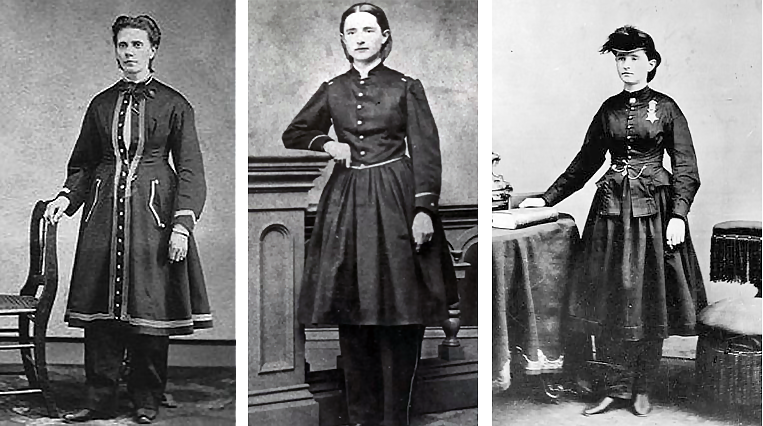
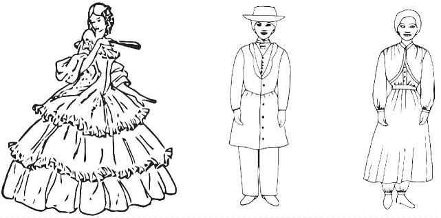
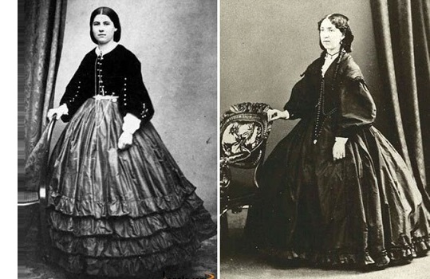
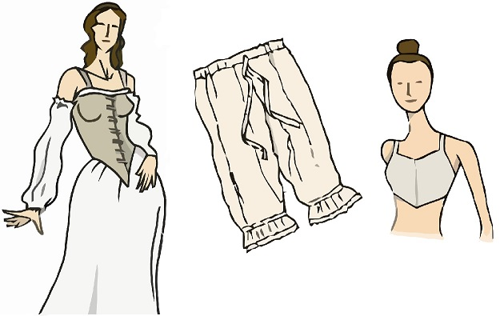
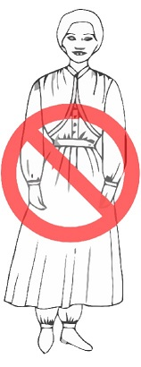

O presente artigo, alicerçado em pesquisas profundas empunha o condão de auxiliar o sincero pesquisador das Escrituras descobrir a verdade, sob a ótica do Senhor, existe calça masculina e calça feminina? As mulheres cristãs podem usar tal vestimenta? Uma pesquisa detalhada revelará o debate acerca do traje Bloomer ou traje americano, assim como, o famigerado vestido da reforma, episódio onde a irmã White taxou o comprimento do vestuário feminino em nove polegadas ou 23 centimetros e suas consequências, qual o resultado do aludido vestido da reforma?
É oportuno salientar, o preceito do vestuário incorpora o rol de doutrinas contestadas por religiosos, haja vista, implicar uma cruz, a supracitada cruz e outras contidas na doutrina cristã, é suavimenta carregada por quem deveras, possuir natureza divina. É dever da Igreja de Deus ensinar aos membros a norma do vestuário, roupas simples compatível com à exigência de Cristo, completamente destituída de qualquer ornamento, cores berrantes ou ídolos com tendência a chamar a atenção para sí e não para Cristo. O encargo de ensinar norma de vestuário não é prioridade do Pastor, mas também de professores e dirigentes, nos moldes do Testemunho:
Não poderá ser completa nenhuma educação que não ensine princípios corretos em relação ao vestuário. Sem tal ensino, a obra da educação é muitas vezes retardada e pervertida. O amor ao vestuário e a dedicação à moda acham-se entre os mais formidáveis oponentes e decididos embaraços que há para o professor.
WHITE, Ellen Golden, Orientação da Criança, 4. ed. Ed. Casa Publicadora Brasileira, 1988, pág. 419 / Educação, pág. 246
O preparo espiritual da igreja, passa pelo crivo dos ensinos doutrinários e da educação cristã, com desiderato de receber justiça de Cristo, cujo símbolo é o vestuário, razão pela qual a irmã White pergunta diretamente para as irmãs da igreja:
Minhas irmãs, vosso vestido ou está falando em favor de Cristo e da sagrada verdade, ou em favor do mundo. Qual será?
WHITE, Ellen Golden, Orientação da Criança, 4. ed. Ed. Casa Publicadora Brasileira, 1988, pág. 420 / Testemunhos para a Igreja 4, pág. 641 / Testemunhos Seletos 1, pág. 596
A resposta mais adequada é, depende da natureza alimentada, onde está o tesouro, ai está o coração, quem escolher acalentar a natureza pecaminosa, com efeito, o vestido e a vida religiosa testificarão em favor do mundo, com suas modas, enfeites, secularismo e ídolos rejeitando o vestuário apropriado, de outro lado:
Os que se acham empenhados nessa obra não se satisfarão com as modas e tolices que absorvem a mente e as afeições das mulheres nestes últimos dias. Caso sejam realmente filhas de Deus, serão participantes da natureza divina.
WHITE, Ellen Golden, Orientação da Criança, 4. ed. Ed. Casa Publicadora Brasileira, 1988, pág. 436 / Testemunhos para a Igreja 3, pág. 483 / Testemunhos Seletos 1, pág. 411
As filhas de Deus com certeza escolherão participar da natureza divina, cujos frutos, aborrece o mundo suas modas e o secularismo, não se envergonham usar o vestuário aprovado por Cristo, simbolo de sua natreza divina com amor e alegria, rejeitando do fundo do coração as modas corruptoras aborrecível ao Criador:
Falai em Cristo, e quando o coração estiver convertido, tudo que não está em harmonia com a Palavra de Deus será banido.
WHITE, Ellen Golden, Orientação da Criança, 4. ed. Ed. Casa Publicadora Brasileira, 1988, pág. 429 / Evangelismo, pág. 272 / Eventos Finais, pág. 88 /
A Bíblia é nossa Constituição em matéria de fé, portanto, todas as normas doutrinárias estão compelidas passar pelo crivo das Escrituras, o preceito do vestuário é simbolo da natureza divina de Cristo, a igreja não tem margem discricionária para adulterá-lo, nesta senda, o Preceito do vestuário compõe o acervo doutrinário da Igreja Remanescente, compelindo os membros zelar, amar e obedecer, desse modo:
Todas as questões de vestuário devem ser estritamente observadas, seguindo bem de perto a regra bíblica. A moda tem sido a deusa que governa o mundo exterior, e frequentemente se infiltra na igreja.
WHITE, Ellen Golden, Orientação da Criança, 4. ed. Ed. Casa Publicadora Brasileira, 1988, pág. 430 / Testemunhos para a Igreja 5, pág. 499 / Conselhos para a Igreja, pág. 258 / Testemunhos Seletos 2, pág. 201
Assim como Satanás usou Balaão para contaminar os hebreus com mulheres Moabitas em Baal Peor, com o firme propósito de afastar o Senhor do acampamento tornando os Hebreus presas fáceis, este astuto enganador, não mede esforços para macular o símbolo da natureza divina de Cristo, o vestuário, infiltrando na igreja a deusa moda, adornos e ídolos, assenhoreando-se dos corações dos crentes, com escopo de afastar o Senhor do meio do seu povo, oferecendo sacrifício defeituoso contaminado pela justiça própria, relegando o preceito do vestuário a mero formalismo desprezível.
A Igreja Remanescente não mede esforços para ensinar e manter a doutrina do vestuário, contudo, sempre haverá opositores para criticar ou denegrir o imponente preceito. Rejeitado por corações carnais, renitentes ao Espírito Santo, a ingente maioria, trilham o caminho largo de longa data, mas, certamente colherão resultado maléfico pagando alto preço:
Em todos os séculos, uma maioria dos professos seguidores de Cristo tem desrespeitado esses preceitos que ordenam abnegação e humildade, que requerem modéstia e simplicidade de conversação, conduta e modo de vestir. O resultado tem sido sempre o mesmo: o afastamento dos ensinos evangélicos, leva a adoração das modas, costumes e princípios do mundo. A piedade vital cede lugar ao morto formalismo. A presença e o poder de Deus, retirados dos círculos amantes do mundo, encontram-se com uma classe de humildes adoradores dispostos a obedecer os ensinos da Sagrada Palavra. Através de sucessivas gerações tem esta orientação sido seguida. Umas após outras se tem erguido as diferentes denominações e, abandonando a simplicidade, perderam, em grande medida, seu primeiro poder.
WHITE, Ellen Golden, Orientação da Criança, 4. ed. Ed. Casa Publicadora Brasileira, 1988, pág. 430 / Mensagens aos Jovens, pág. 354
De fato, em todos os séculos a maioria dos homens se opuseram a verdade, nos últimos dias a luta é mais renhida, derespeito, critica e rebelião são o combutível dos opositores. Embora não saibam, a imane maioria palmilha o caminho largo adorando Satanás, estão sob seu comando. Em sua infinita misericórdia e graça o Criador estabeleceu barreiras de contenção para salvaguardar sua Igreja desde a queda de Adão, quando o Senhor disse: Gênesis 3:15. Ao estabelecer inimizade entre sua igreja e Satanás, o Senhor estabeleceu regras doutrinárias sólidas, espera respeito a essas fronteiras, uma das regras vincula a forma de vestir do seu povo, símbolo da Justiça de Cristo. Satanás tenta derrubar a barreira, visando afastar Deus do seio da Igreja, portanto, insta indagar, como ele vai fazer isso?
Satanás está continuamente procurando vencer o povo de Deus, derrubando as barreiras que os separam do mundo.
WHITE, Ellen Golden, O Grande Conflito, 30 ed. Ed. Casa Publicadora Brasileira, 1985 pág. 512
Satanás aproxima a igreja do mundo atraindo os membros aos prazeres, deleites, modas e festivais de igrejas, tal como o fez em Baal Peor; derrubada a barreira de contenção estimula os crentes cobiçarem as impudicas vestes gentílicas adotando modelos contaminados por secularismo, enfeites e ornamento, se envergonhando do preceito do vestuário maculando a representação da justiça de Cristo com impurezas. O Senhor não oferece a justiça de Cristo por metade, destarte, não aceita vestimenta por metade, com mangas até o cotovelo, ou roupas curtas. Então:
Satanás inventou as modas que deixam pernas e braços expostos.
WHITE, Ellen Golden, Testemunhos para a Igreja 2, Ed. Casa Publicadora Brasileira, 2005, pág. 531 / Testemunhos para a Igreja 4, 2007, pág. 629 / Orientação da Criança, 1954, pág. 279
Quando Deus semeou inimizade no coração do seu povo contra Satanás, mudou-lhes a maneira de vestir-se e os vestiu. Destarte, Deus não aceita membros da sua igreja, atuar em seu serviço vestidos pela metade, oferecendo sacrifício defeituoso. Ademais, o Senhor separa o servo fiel do infiel de acordo com os frutos da natureza imputada no coração, quem é movido pela natureza divina, certamente adotará as normas da igreja de Deus sem dificuldades, no entanto, os adeptos da natureza pecaminosa, com certeza resistem submeter-se aos ditames da doutrina de Cristo. Este é o propósito de Satanás, alimentar natureza pecaminosa encurtando a distância da igreja com o mundo e suas modas, infelizmente ele tem logrado êxito, porque:
A linha de separação entre cristãos professos e ímpios é agora dificilmente discernida. Os membros da igreja amam o que o mundo ama, e estão prontos para se unirem a ele; e Satanás está resolvido a uni-los em um só corpo, e assim fortalecer sua causa arrastando-os todos para as fileiras do espiritismo.
WHITE, Ellen Golden, O Grande Conflito, 30 ed. Ed. Casa Publicadora Brasileira, 1985 pág. 593
A linha divisória saparando a Igreja de Deus do mundo, é visivel, a igreja difere do mundo quando a doutrina de Cristo é amada e obedecida, de outro norte, quando o crente se conforma apenas com o nome Adventista do Sétimo Dia esculpido na parede da igreja, absorvendo secularismo em detrimento da doutrina adventista, Satanás assumiu o controle, Deus se afastou deles.
A irmã White descreveu de forma cirúrgica, como Satanás quebra a linha de separação ou inimizade da igreja com o mundo visando escravizar os homens sob seu jugo, utiliza a moda como deusa, acarretando grande fardo para as igrejas apostatadas, inerte ao perigo:
Metade dos seus fardos advêm da tentativa de seguir as modas; contudo, elas aceitam ansiosamente o jugo, porque a moda é o deus que adoram. Acham-se tão verdadeiramente presas em cadeias de servidão como o mais autêntico escravo; e, no entanto, falam de independência! Não conhecem os primeiros princípios da independência. Não têm vontade, gosto ou critério próprios. São mundanas, sem Deus e sem esperança.
O gosto correto no vestuário não deve ser desprezado ou condenado. Conquanto tufos, enfeites e ornamentos desnecessários devam ser omitidos.
WHITE, Ellen Golden, Mensagens Escolhidas 3, 1. ed. Ed. Casa Publicadora Brasileira, 1987, pág. 245
De forma infeliz, membros tem se distanciado de Cristo e sua justiça, curvando os joelhos sobre o altar de Satanás adoram a sedutora deusa moda, secularismo e ornamentos inúteis, acorrentados como verdadeiros escravos acreditam estar livres. Os próprios líderes religiosos alvo da confiança incondicional de seus sequazes os enganam: II Pedro 2:19. Pastores e líderes de formação acadêmica teológica, priorizam entretenimento vulgar em detrimento do conhecimento doutrinário, condenando os membros imolarem sobre o altar do maligno.
Satanás domina as igrejas apostatadas e tenta ingressar na igreja de Deus ocupando corações de membros incautos, desapercebidos, brincam de gato e rato com Cristo, em tais corações Satanás achou abrigo, um campo fértil para semear dúvidas e amor ao vestuário secular curvando os joelhos no altar da moda afrontando Cristo. O grande enganador endurece corações rebeldes, impedindo a gloriosa luz divina da natureza de Cristo penetrar, corroendo a igreja com apostasia separando-a inteiramente de Deus e de suas promessas vindouras:
Não brinqueis, minhas irmãs, por mais tempo com vossa própria alma e com Deus. Foi-me mostrado que a principal causa de vossa apostasia é o amor que tendes ao vestuário. Isto leva à negligência de sérias responsabilidades, e mal vos achais possuidoras de uma centelha do amor de Deus no coração. Renunciai, sem demora, à causa de vosso desvio, pois é pecado contra vossa própria alma e contra Deus. Não vos endureçais pelo engano do pecado. A moda está deteriorando o intelecto e carcomendo a espiritualidade de nosso povo. A obediência à moda está penetrando nossas igrejas, fazendo mais que qualquer outro poder para separar nosso povo de Deus.
WHITE, Ellen Golden, Testemunhos Seletos 1, 5 ed. Ed. Casa Publicadora Brasileira, 1984, pág. 600 / Conselhos sobre Saúde, pág. 603
Quem brinca com a vida espiritual, transgredindo a Lei, Estatutos e Preceitos morais, não tem noção do domínio de Satanás sobre suas vidas e de sua família.
Ao longo dos séculos Satanás trabalha na criação de modas, com escopo de expor braços e pernas das irmãs desnuda. Um considerável número de irmãs acata sugestões do inimigo favorecendo seus trabalhos em detrimento do amor e submissão a sagrada doutrina de Cristo, entre elas o vestuário, destarte, envergonha a Igreja e algumas vezes a expõe ao ridículo oferecendo oportunidade ao inimigo da verdade criticar e escarnecer da Igreja de Deus.
Satanás encetou o trabalho de apostatar as igrejas denegrindo o preceito do vestuário. Os modernos pastores adventistas autorizam suas irmãs usarem calças compridas na igreja, alegando existir diferença entre calça masculina e feminina. A infeliz persistência da Igreja Adventista do Sétimo Dia, em abandonar a norma de vestuário, resultou na apostasia exibindo irmãs com roupas curtas, bermudas e minissaias. Neste contexto, deveras, eles podem defender o uso de calças compridas, considerando as minissaias e bermudas, a calça comprida é mais decente. Contudo, estão colhendo os frutos da semeadura, caso a aludida igreja não tivesse abandonado o preceito do vestuário, conservando uso do vestido adequado para mulher cristã, Satanás seria vencido, e eles não estariam defendendo a esdrúxula tese exposta.
O propósito de Satanás é claro e cirúrgico, apostatar a Igreja removendo os velhos marcos doutrinários, com isto, Deus se afasta da igreja incrédula desamparando-a. Satanás assume o controle forjando caminho com atalho para ajustar aos padrões da sociedade, no entanto, Provérbios 14:12. A criação de múltiplas doutrinas é outro engodo do inimigo para confundir e afastar as igrejas da verdadeira doutrina cristã e de Deus, nesse sentido a pena da irmã White se pronuncia:
Inumeráveis são as doutrinas errôneas e as fantasiosas idéias que estão ganhando terreno entre as igrejas da cristandade. É impossível avaliar os maus resultados de remover um dos marcos que foram fixados pela Palavra de Deus. Pouco dos que se arriscam a fazer isto param com a rejeição de uma única verdade. A maioria continua a pôr de lado, um após outro, os princípios da verdade, até que se tornam efetivamente incrédulos.
WHITE, Ellen Golden, O Grande Conflito, 30. ed. Ed. Casa Publicadora Brasileira, 1985, pág. 530
Quando se trata da doutrina cristã, os religiosos criam comichão nos ouvidos para não ouvir, em especial o preceito do vestuário, propiciam cenário de rebeldia e apostasia galopante, engrossando as fileiras de Satanás mestre dos enganos, condenando almas a queimar no fogo. Há séculos Satanás tenta penetrar na Igreja de Deus, fomentando baixar as normas. Na época da irmã White, o inimigo das almas criou modelo de vestuário feminino semelhante ao vestuário masculino conhecido como traje americano ou Bloomer, gerando verdadeira comoção na igreja, diante do episódio fomentado, é forçoso indagar, a irmã White aprovou este modelo de vestuário? É de bom tom, conhecer o famigerado traje americano, Bloomer, estudando-o minuciosamente, máxime, as medidas tomadas pela igreja da época da irmã White.
A REFORMA DO VESTUÁRIO
O Traje Americano ou Bloomer
Antes de discorrer acerca do tema, da lustrosa doutrina do vestuário, suas consequências e medidas adotadas pela irmã White, se faz mister invocar a História para conhecermos como surgiu esse modelo de roupa.
Em 1852, Elizabeth Smith Miller, defensora e apoiadora financeira do movimento feminista, finalmente decidiu colocar um basta em seu descontentamento quanto ao vestuário feminino de sua época. Para ela, aquela maneira de vestir era mais um símbolo da diferença entre o homem e a mulher. Assim, decidiu que não usaria mais aquele vestido, mas "calças turcas" – calças compridas até a altura do tornozelo – com um vestido curto que terminava um pouco abaixo dos joelhos. Ao visitar a prima, Candy Stanton, foi apresenta à sua amiga, Amelia Bloomer. As duas ficaram maravilhadas com o estilo revolucionário de Elizabeth e imediatamente adotaram o modelo. Amelia publicou em um jornal o novo vestuário e à partir daí o traje ficou popularmente conhecido como "bloomer", em homenagem a Amelia. Em pouco tempo outras mulheres adotaram o novo estilo também e passaram a usar calças. No entanto, nem todos aprovaram a nova proposta de vestuário.
Disponível em: <http://www.tudoparavegetarianos.com.br>
O nascedouro da novidade, calças femininas, é oriundo de defensoras feministas com desiderato de diminuir a diferença entre os sexos, posteriormente absorvida pela igreja. Na época da irmã White, a famigerada calça feminina foi rechaçada, rejeitadas pela igreja, hoje os pastores adventistas ensinam, adotam, defendem e permitem as irmãs usarem.
Elizabete Smith era feminista declarada e almejava diminuir a desigualdade entre homens e mulheres, para ela o vestuário era a causa de tamanha distinção entre os sexos, então criou o modelo semelhante à veste masculina. Eram calças compridas, largas, com um vestido curto por cima. O famigerado modelo de vestuário, aparenta decência superior as calças femininas modernas e foi rejeitada por Ellen White. Hoje, os pastores adventistas defendem e a introduziram na igreja como solução para cobrir a nudez das irmãs.
Apesar da feminista Elizabete Smith, criar o modelo de vestuário semelhante ao masculino, quem deveras, popularizou e introduziu na sociedade americana foi a advogada Amélia Bloomer, razão pela qual o novel modelo de vestuário foi estigmatizado com o seu nome, conforme artigo extraido da Internet:

O Bloomer original foi uma peça de vestuário inventada pelas americanas Elizabeth Smith Miller e Fabrizia Flynn, mas popularizada por Amelia Bloomer no início de 1850. Amelia era advogada e lutava pelos direitos das mulheres, por isso a peça recebeu o nome dela.
Bloomers eram calças largas, compridas e folgadas que se estreitavam na altura dos tornozelos e usadas por baixo das saias.
Mas poucas mulheres usavam a peça, e as que usavam eram ridicularizadas e insultadas pela imprensa. Só que muitas das mulheres que usavam a peça estavam profundamente envolvidas na "reforma do vestuário", na abolição da escravatura e do movimento pelos direitos das mulheres - eram as primeiras feministas, que reclamavam das restrições das roupas e da saúde. O bloomer acabou sendo adaptado também para as meninas e para educação física feminina.
Disponível em: <http://www.modadesubculturas.com.br>
Insta adentrar em outro tópico para conhecer melhor o movimento feminista. Qual o objetivo do Movimento Feminista? Segundo Oliveira (1969) citado por Nogueira (n.d.)
Feminismo pode ser definido como um “movimento social cuja finalidade é a equiparação dos sexos relativamente ao exercício dos direitos cívicos e políticos.
Oliveira, 1969, pág. 424
O feminismo é de origem satânica, nasce com o espiritismo moderno, com escopo de frustrar os harmoniosos planos de Deus, orientando a igualde entre os sexos, disputas e oposição.
Qual a importância dessas informações e sua ligação com o assunto de vestuário? Amélia Bloomer, ousou impor uma reforma espúria do vestuário em sua época, final do século XIX, era ligada ao Movimento Feminista. Conforme relata o texto:
Amélia Bloomer era ativista sufragista americana, e lutava pelos direitos das mulheres. Seu marido incentivava-a escrever para um jornal, o Lily, que continha cerca de 6000 assinantes e tinha os escritos voltados para o assunto de temperança. O jornal, porém, também foi direcionado para publicações sobre o direito das mulheres, incluindo tópicos de desigualdade de oportunidades educacionais, de casamento e de propriedade, sufrágio, etc. Movida pelo desejo de acabar com as modas dominantes de sua época, como os espartilhos e as saias longas, implementou uma reforma que visava a liberdade.
Salão Nacional de Mulheres da Fama, 1995; Alexandra & Anita, 2006
Por trás da suposta igualdade entre os sexos, Satanás trabalhou utilizando o feminismo para acabar com a norma do vestuário, minando este pávido preceito, o alvo era acabar com uso de saias longas, evoluindo posteriormente para denegrir o preceito do vestuário, símbolo da justiça de Cristo.
Segundo o encimado texto, um dos objetivos precípuos do movimento feminista era diminuir as diferenças entre os sexos, como também, acabar com uso das saias longas implementando uma reforma no vestuário. No entanto, a raiz do famigerado movimento tinha profundas ligações com o espiritismo moderno florescendo na época das pancadas misteriosas das irmãs Fox. Vejam o texto seguinte:
"Além de desafiar a ordem de Deus expressa em Sua Palavra, o movimento feminista possui fortes laços com o espiritismo. A Srta. Stanton, juntamente com outras líderes feministas, tinham forte interesse pelo mundo espírita. Na verdade, na ocasião em que ela ajudou a redigir a "Declaração dos Direitos e Opiniões" feministas, espíritos começaram a bater na mesa."
A prova de Satanás manipular o movimento feminista, se traduz no forte vínculo com o espiritismo moderno, movimento crescente na época com a propagação das irmãs Fox. Os dois movimentos vêm da mesma raiz, Satanás, com desiderato de macular os Preceitos de Deus.
Uma das integrantes do movimento feminista. A Srta. Stanton ousou criar The Women"s Bible [A Bíblia da Mulher], uma versão da Bíblia em que os comentaristas tentam justificar os textos que apresentam as diferenças entre o homem e a mulher. Ela escreveu:
Não creio que homem algum jamais viu ou conversou com Deus, não creio que Deus inspirou o código mosaico, ou revelou aos historiadores o que eles relatam que Ele fez com relação à mulher, pois todas as religiões da face da Terra a degradam, e enquanto as mulheres aceitarem a posição a ela designada, sua emancipação será impossível… A lei canônica, as Escrituras, os credos e os códigos e a disciplina da igrejas predominantes carregam a imagem do homem falível…
Elizabeth Cady Stanton, The Woman"s Bible, part 1, p. 12-13
Isso é feminismo. Essas foram as primeiras mulheres norte-americanas a usarem calças.
Lacey Brinley, Feminism or Femininity
O movimento feminista aflorou na época da irmã White e bateu na porta da igreja Adventista juntamente com o traje americano, com gélida e sombria ameaça para denegrir a doutrina do vestuário, obrigando-a a usar a pena e reprender irmãs inclinadas adotar tal movimento, rechaçando o acolhimento desse movimento, a adoção do traje americano seria um rompimento com a Mensagem do Terceiro Anjo:
Os que se sentem convocados a unir-se ao movimento em prol dos direitos da mulher e da suposta reforma do vestuário, podiam romper toda ligação com a mensagem do terceiro anjo. O espírito que acompanha um movimento não pode estar em harmonia com outro. As Escrituras são claras a respeito dos procedimentos e direitos de homens e mulheres. Os espiritualistas adotaram totalmente esse singular modo de trajar-se.
WHITE, Ellen Golden, Testemunhos para a Igreja 1, 1. ed. Ed. Casa Publicadora Brasileira, 2000, pág. 457
A clareza esculpida na pena da irmã White, não deixa margens para distorções. O movimento feminista e a famigerada reforma no vestuário, calça comprida feminina, tem forte vínculo com o espiritismo, liderado por Satanás. Adotar o traje americano, uso de calças compridas pelas irmãs, segundo o texto, resulta no rompimento com a Mensagem do Terceiro Anjo e consequentemente com Deus.

Na primeira fase do movimento feminista, Satanás criou modelo de calças compridas e fomentou o uso pelo sexo feminino, estava apenas iniciando a quebra de barreiras de contenção estabelecida por Deus para proteger a igreja. O alvo do inimigo, consiste em quebrar todas as barreiras de proteção para conduzir a Igreja aos impudicos prazeres mundanos. Este movimento hibernou por um período, enquanto o inimigo articulava e preparava o terreno para investir com força total logrando êxito em sua empreitada.
A nova investida, no entanto, ocorreu na década de 1960, na segunda onda do feminismo, veio com a conhecida revolução cultural, criou-se o vestuário unissex, as calças se tornaram um símbolo da rebelião feminina e sua nova função. A mulher declinou de sua missão auxiliadora completando o homem, tornando-se sua adversária e concorrente. Agora, nos dias hodiernos, Satanás investiu e quebrou a resistência das igrejas, as calças estão dentro das igrejas, defendidas por Ministros e Pastores. As mulheres não primam por cumprir as Escrituras conservando respeito e diálogo com o marido, refletindo harmonia no lar com a prole, com forte influência do feminismo, o resultado traduz-se em conflitos, agressões, separações e feminicídio.
Diante do exposto, é pertinente indagar: Os pastores acumulam razão, ao defender a tese da famigerada distinção entre calça masculina e calça feminina?
Quem está acobertado com o manto da natureze divina de Cristo, vislumbra claramente, no contexto da Palavra de Deus, não existe calça masculina e calça feminina, os estilistas, criadores de modas, alcunham esta conotação alterando alguns modelos com meros detalhes de estampas, recortes e cores, classificando-as como calças masculinas, femininas ou unisex, para Deus não faz diferença, vestuário masculino é totalmente diferente do vestuário feminino. Para o Criador é inaceitável tal proposta e uma abominação o uso de vestuário masculino semelhante ao feminino pelos membros de sua Igreja. A onisciência divina do Senhor é suficiente para desmascarar a farça de Satanás ao tentar fomentar essas tendências para contaminar a igreja, razão pela qual o Senhor adverte seus atalaias:
Há uma crescente tendência de as mulheres serem em seu vestuário e aparência tão semelhantes ao outro sexo quanto possível e de confeccionarem seu vestuário muito semelhante ao do homem. Mas Deus declara que isso é uma abominação. "Que do mesmo modo as mulheres se ataviem em traje honesto, com pudor e modéstia." 1 Timóteo 2:9.
WHITE, Ellen Golden, Testemunhos para a Igreja 1, 1. ed. Ed. Casa Publicadora Brasileira, 2000, pág. 457 / Orientação da Criança, 1954, pág. 279
Satanás repetiu a tática utilizada com Eva, para invadir as igrejas hodiernas, inverte a verdade, mentiu quando disse a Eva: Se você comer do fruto não morrerá, amargo engano, da mesma forma ele inverte a ordem de Deus falando pela boca e pena de pastores apostatados ao defenderem a existência de calça masculina e calça feminina, autorizando o uso de calça feminina pelas irmãs, com a desculpa de cobrir a nudez de suas pernas desnudas do vestuário usual de mini saias, bermudas e vestidos curtos, como insuficientes para cobrir a nudez, comparadas com as calças compridas.
São infundadas as alegações dos pastores, se as irmãs estão nuas na igreja a culpa não são das saias e vestidos curtos adotados por elas, pertence a pastores e Ministros por banirem a doutrina do vestuário de suas igrejas de saias e vestidos longos. A imitação de vestuário do sexo oposto é abominação para Deus. O Senhor usou a irmã White para repreender tal ensinamento e ordenar suas servas usarem vestuário de conformidade com as Escrituras, assim ela escreveu:
As mulheres cristãs devem seguir a Cristo e fazer seus vestidos em conformidade com a Palavra de Deus. Existe ainda outro estilo de vestido adotado pela classe de supostas reformadoras do vestuário. Imitam o máximo possível o sexo oposto. Usam bonés, calças, coletes, paletós e botas, sendo estas últimas as partes mais destacadas no traje.
Nesse estilo de vestuário a ordem de Deus foi radicalmente invertida e desatendidas Suas instruções especiais. "Não haverá trajo de homem na mulher, e não vestirá o homem veste de mulher; porque qualquer que faz isto abominação é ao Senhor, teu Deus." Deuteronômio 22:5. Deus proíbe que Seu povo adote essa moda.
WHITE, Ellen Golden, Testemunhos para a Igreja 1, 1. ed. Ed. Casa Publicadora Brasileira, 2000, pág. 460
Amados irmãos, este texto é limpido como a luz do sol, é um claro ASSIM DIZ O SENHOR. Deus proibe terminantemente seu povo adotar a moda de calça feminina, Ele considera uma abominação para sua Igreja, a irmã White fundamenta com uma repreesão do festejado apóstolo Paulo:
Esta moda de vestuário Deus não deseja que Seu povo adote. [...] Paulo pronunciaria uma repreensão, fosse ele vivo hoje, se contemplasse mulheres que professam piedade usando esta moda de vestuário.
WHITE, Ellen Golden, Mensagens Escolhidas 2, 4. ed. Ed. Casa Publicadora Brasileira, 2000, pág. 477-478
Enquanto os pastores cunham a famigerada calça feminina de solução para cobrir a nudez das irmãs dentro da igreja, Deus considera abominação, digna de repreensão e corte da comunhão, caso haja resistência. A defesa dos pastores é justificada por sua incompetência em manter a pureza da doutrina de Cristo. Naufragaram a igreja no secularismo para ganhar poder econômico, político e social, sob desculpa de ganhar ímpio e foram devorados pelo mundo e seus ornamentos.
O Senhor ordenou sua Igreja não adotar vestuário masculino semelhante ao vestuário feminino, exigiu uma clara distinção com respeito ao vestuário do homem e da mulher, proibiu o acolhimento de vestimenta semelhante para ambos os sexos, haja vista, resultar em confusão e aumento da criminalidade, esta profecia se cumpriu. Os céticos ao preceito do vestuário, acreditam não ter nada a ver, hoje podemos claramente constatar, a criminalidade é galopante, observa-se desde a década de 60, quando o movimento feminista infiltrou o vestuário semelhante para ambos os sexos no mundo, a criminalidade se desenvolveu na medida da corrupção alimentada por naturezas pecaminosas, divorciadas de Deus, forçando-o a repreendê-los por não obedecer sua Lei: Isaías 30:9. Na mesma direção converge os ensinamentos da irmã White, ao relatar:
Deus determinou que houvesse clara distinção entre trajes masculinos e femininos, e considerou o assunto de suficiente importância para dar explícitas instruções a esse respeito, pois se o mesmo traje for usado por ambos os sexos, causaria confusão e grande aumento de crime. Se o apóstolo Paulo estivesse vivo e contemplasse as mulheres que professam piedade usando esse tipo de vestuário, pronunciaria a repreensão: "Que do mesmo modo as mulheres se ataviem em traje honesto, com pudor e modéstia, não com tranças, ou com ouro, ou pérolas, ou vestidos preciosos, mas (como convém a mulheres que fazem profissão de servir a Deus) com boas obras." 1 Timóteo 2:9, 10. A maioria dos professos cristãos, desrespeitam totalmente os ensinos dos apóstolos, usando ouro, pérolas e vestidos custosos.
WHITE, Ellen Golden, Testemunhos para a Igreja 1, 1. ed. Ed. Casa Publicadora Brasileira, 2000, pág. 460
A igreja primitiva labutou com empenho no combate aos ídolos seculares, tipo estampas e enfeites no vestuário, uso de joias, maquiagens, pinturas. O uso de calças femininas estava fora de cogitação, são novidades do fim dos tempos endossadas por Satanás.
Mesmo com toda repreensão e cuidado por parte dos atalaias, Satanás tentou introduzir a famigerada moda na igreja Adventista no tempo da irmã White, por inspiração divina, a serva do Senhor tomou atitude totalmente diferente dos pastores Adventistas de hoje, proibiu o uso de calças femininas na Igreja de Deus em todas as épocas, escrevendo:
A assim chamada reforma do vestuário porta um espírito de leviandade e ousadia que se ajusta perfeitamente ao vestuário adotado. Modéstia e recato parecem desviar-se daqueles que adotam esse estilo de vestir. Foi-me mostrado que Deus requer que tenhamos uma conduta coerente e sensata. Adotem as irmãs o traje americano, e destruirão a própria influência e a de seus maridos.
Esse testemunho me foi dado como reprovação para as irmãs que se sentem inclinadas a adotar um estilo de vestuário criado para os homens.
WHITE, Ellen Golden, Testemunhos para a Igreja 1, 1. ed. Ed. Casa Publicadora Brasileira, 2000, pág. 458
O treje americano, Bloomer ou calças femininas foram proibidas pela irmã White, por ordem superior do próprio Deus, não foi permitido o uso na igreja. Não existe margem nas Escrituras para sustentar a tese de calça feminia e calça masculina. A famigerada tese é invenção de Satanás sustentada por igrejas apostatadas, ávidas pelos prazeres do mudo.
Muitas irmãs, contemporâneas da irmã White, ficaram ansiosas por usar a novidade, houve tumulto na igreja acerca do tema, obrigando a irmã White se manifestar:
No Testemunho Para a Igreja n° 10, declarei o seguinte:
Deus não deseja que Seu povo adote essa pretensa reforma de vestuário. Trata-se de um vestuário ousado, completamente inadequado às modestas e humildes seguidoras de Cristo.
WHITE, Ellen Golden, Testemunhos para a Igreja 1, 1. ed. Ed. Casa Publicadora Brasileira, 2000, pág. 456-457
Mesmo com todas as repreensões e manifestações contrárias do Senhor pela pena da irmã White ao abominável uso de vestimenta semelhante para ambos os sexos, algumas irmãs de coração corrompido, almejavam adotar a calça feminina na igreja, então cuidou de espalhar mentiras, acusando a irmã White de adotar e usar o traje americano, juntamente com as irmãs de Battle Creeck, sede da direção da igreja. A essa leviandade a irmã White respondeu com um provérbio repreendendo com rigor:
Circulam informações de que a "irmã White usa o traje americano", e que esse estilo de vestimenta é geralmente usado pelas irmãs de Battle Creek. Lembrei-me agora de um provérbio que diz: "Uma mentira dá volta ao mundo enquanto a verdade põe as botas".
WHITE, Ellen Golden, Testemunhos para a Igreja 1, 1. ed. Ed. Casa Publicadora Brasileira, 2000, pág. 463
Para pulverizar qualquer resquicio de dúvidas, no sentido do Senhor não aceitar o uso de calças femininas, chamado traje americano ou Bloomer a irmã White opôs-se ao famigerado traje e mais uma vez reprovou apontando-o em total desacordo com as Escrituras:
O chamado traje americano, parecendo mais com os trajes masculinos. Consiste de colete, calças e uma peça semelhante a um casaco, que vai até a metade da coxa. Oponho-me a esse tipo de vestimenta, pois me foi mostrado como estando em desacordo com a Palavra de Deus.
WHITE, Ellen Golden, Testemunhos para a Igreja 1, 1. ed. Ed. Casa Publicadora Brasileira, 2000, pág. 463
Abaixo destaca-se três modelos do famigerado traje americano ou Bloomer, todos reprovados pela Palavra de Deus. Vale salientar, o traje americano, ou traje Bloomer, era mais decente e feminino comparados as calças femininas atuais defendidas pelos pastores adventistas e, mesmo assim, foi reprovado pela mensageira de Deus, como uma abominação para a igreja de Cristo. Traje Americano ou Bloomer (calça feminina). Três modelos de calças femininas rejeitados.
De fato, Satanás tentou introduzir o famigerado traje americano na igreja dos pioneiros Adventista, com o nome de reforma do vestuário, no entanto, foi tolhida sua entrada na igreja na época da irmã White, ela trouxe para a igreja a luz da palavra de Deus declarando:
Deus não deseja que Seu povo adote essa pretensa reforma de vestuário. Trata-se de um vestuário ousado, completamente inadequado às modestas e humildes seguidoras de Cristo.
WHITE, Ellen Golden, Testemunhos para a Igreja 1, 1. ed. Ed. Casa Publicadora Brasileira, 2000, pág. 457
Neste exemplo, vislumbra-se, nem sempre aparência de reforma pode ser introduzida na igreja como um benefício, depende de qual espírito a reforma é motivada, se o reavivamento é proveniente da natureza divina ou natureza pecaminosa, se for impulsionada pela natureza divina os frutos são modéstia, simplicidade e pudor, alinhado com as sagradas Escrituras influenciando para obediência e testemunhando em favor de Cristo e sua Doutrina, no entanto, o traje americano ou vestimenta semelhante ao sexo oposto, trouxe os frutos da natureza pecaminosa contrária as Escrituras, com influências deletérias para a igreja, segundo relatos de White:
A suposta reforma do vestuário é acompanhada de um espírito frívolo e audacioso. A modéstia e o recato parecem ter-se afastado de muitos que adotam esse estilo de vestuário. Foi-me mostrado que Deus requer que adotemos uma conduta coerente e explicável. Se as irmãs adotarem o traje americano, anularão a própria influência e a de seus maridos.
WHITE, Ellen Golden, Testemunhos para a Igreja 1, 1. ed. Ed. Casa Publicadora Brasileira, 2000, pág. 422
Por fim, não podemos olvidar os claros ensinamentos da Palavra de Deus, esculpidas nas Escrituras: Mateus 5:14-16.
Em meio as densas trevas, a igreja Remanescente conserva a árdua missão de iluminar o mundo, com o Evangelho ensinado pelos apóstolos, disseminado pela igreja Síria e conservado pela igreja do deserto, dissipando a nuvem negra da fétida apostasia. Como luz do mundo, a igreja Remanescentes obedece a doutrina do vestuário, simbolo da justiça de Cristo e escudo protetivo para salvaguardar a igreja da tirana moda, sensualismo, nudismo infrene e ídolos acariciados, mantendo higido os princípios da igreja primitiva, defendidos com o sangue dos mártires e entregue para igreja Remanescente juntar-se ao Terceiro Anjo, na proclamação do alto clamor, último chamado de misericórdia antes do fechamento da porta da graça. Enquanto pastores e Ministros apostatam as igrejas populares, alimentando a natureza pecaminosa de seus membros, Satanás trabalha para mantê-los ocupados com palha e feno, desviando-os da verdade.
O Traje da Reforma
Conforme estudado alhures. Quando Adão e Eva pecaram, perderam a veste de luz e glória e com ela sua natureza divina, ficaram sob domínio de Satanás, e salvos por Cristo pelo Plano de Redenção. Sabendo do simbolismo do vestuário, o inimigo cria modas e ensina os crentes vestirem-se de forma a não representarem o salvador neste particular. Assim sendo, temendo satisfazer a natureza pecaminosa e desagradar ao Criador, o cristão sincero veste-se com modelos de vestuário segundo as Escrituras, para isso, antes de confeccionar ou comprar as vestes, acolhe os sábios conselhos das Escrituras quando diz: Sofonias 2:3. De fato, ninguém tem o condão de esconder-se do Senhor, tão pouco apresentar desculpas oriundas de negligências ou autosatisfação para alimentar os desejos da carne, vestindo-se em desarmonia com a instrução do Senhor. Destarte, é de bom tom beber águas limpíssimas na fonte de sabedoria e instrução como convém aos santos, alicerçados na natureza divina para andar de conformidade com a vontade do Senhor. Ellen White, preocupou-se com as irmãs, por conta dos modelos de vestuários confeccionados de acordo com sua natureza pecaminosa, nesta senda, apelou ao bom senso das irmãs:
Solicito a vocês, irmãs, não confeccionem modelos segundo suas próprias idéias. Conquanto haja modelos corretos e de bom gosto, há também os impróprios e de mau gosto.
WHITE, Ellen Golden, Testemunhos para a Igreja 1, 1. ed. Ed. Casa Publicadora Brasileira, 2000, pág. 522-523
Modelos confeccionados para satisfazer as próprias ideias, são modelos mundanos, contaminados pelas modas impúdicas, maculando o símbolo da natureza divina de Cristo, chamando a atenção para sí, ofuscando o Codeiro de Deus. Os modelos de bom gosto, na ótica celeste, são produzidos de acordo com as Escrituras, obedecendo o precioso Preceito do vestuário, roupas longas, sem cores berrantes, isenta de modas e enfeites fúteis, abominando as famigeradas calças femininas
A igreja precisa unir-se e andar de braços dados com a verdade, ajustada com a doutrina para realizar uma obra salutar em prol do pecador, obedecendo a sã doutrina por palava e exemplo, segundo a irmã White:
Eis nossa obra. Não é aos pecadores que se dirige esta mensagem, mas a todos os mansos da Terra, que põem por obra o Seu juízo, ou que guardam os Seus mandamentos. Há trabalho para todos, e se todos obedecerem veremos uma suave união nas fileiras dos guardadores do Sábado.
WHITE, Ellen Golden, Testemunhos para a Igreja 1, 1. ed. Ed. Casa Publicadora Brasileira, 2000, pág. 427
Com efeito, se a igreja labutar unida a Cristo, afinada com sua Doutrina, não terá problemas de apostasia e rebeldia, todos obedecem os Preceitos e Leis do Senhor com imensurável amor, irmãos e irmãs certamente confeccionariam e comprariam vestuário de acordo com as normas da igreja. Antes de comprar, certamente tomariam conselhos e inclinariam os ouvidos para ouvir e atender os claros ensinamentos de Ministros, dirigentes e Pastores do pequeno rebanho do Senhor, portanto, irmãos e irmãs, cultivem a sabedoria da natureza divina, acolham os conselhos do apóstolo Paulo quando escreveu à Timóteo com a seguinte exortação: I Timóteo 4:16. Como é cediço, somos um povo diferente de todos os povos, sempre foi assim, portanto, não podemos nos envergonhar dos preceitos da igreja de Deus, mas reverenciar a Deus adotando-os em nossa vida com amor, quer seja a barba, cabelo, véu ou vestuário, o certo é tomar cuidado:
Nenhuma ocasião deve ser dada aos descrentes para criticar nossa fé. Somos considerados esquisitos e diferentes, e não devemos seguir um procedimento que leve os descrentes a assim nos julgarem, mais do que nossa fé requer que sejamos.
WHITE, Ellen Golden, Testemunhos para a Igreja 1, 1. ed. Ed. Casa Publicadora Brasileira, 2000, pág. 420 / Testemunhos Seletos 1, pág. 169
Quando o crente veste-se de maneira indecorosa, afastando-se da norma do vestuário apropriado, concede aos descrentes ocasião para julgar a Igreja e zombar de Cristo, criticando a fé recebida dos santos. A Igreja Remanescente é diferente de todas as igrejas, no vestuário, alimentação, dias de guarda, Festas, e demais pontos doutrinários herdados da gloriosa igreja primitiva.
Com efeito, a Igreja Remanescente é diferente das igrejas populares, haja vista, o contraste existente entre a Palavra de Deus, e as modas, orgias e prazeres do mundo, ademais, a igreja de Deus não pode ser ridicularizada adotando modas deletérias. Se o mundo criar modas imitando o vestuário do povo de Deus, não devemos abandonar nosso modelo de vestuário por essa razão, contudo, não podemos denegrir a imagem do símbolo da natureza divina de Cristo com as modas, enfeites e decotes sensuais, acreditando beirar ao ridículo se não acompanhar o mundo e suas modas. A irmã White sempre ensinou e defendeu o uso do vestuário apropriado nos Testemunhos:
As mulheres cristãs não se devem dar a trabalhos para se tornarem objeto de ridículo por vestir diferentemente do mundo. Mas, se seguindo suas convicções de dever a respeito do vestir modesta e saudavelmente, elas se acham fora da moda, não devem mudar de vestuário a fim de ser semelhantes ao mundo; porém manifestar nobre independência e coragem moral para ser corretas, ainda que o mundo inteiro delas difira. Caso o mundo introduza um modo de vestir decente, conveniente e saudável, que esteja em harmonia com a Bíblia, não muda nossa relação para com Deus ou para com o mundo ou adotar tal estilo de vestuário. As mulheres cristãs devem seguir a Cristo e fazer seus vestidos em conformidade com a Palavra de Deus. Devem evitar os extremos. Devem elas adotar humildemente uma conduta reta, apegando-se ao direito por ser direito, sem se preocupar com aplausos ou censuras.
WHITE, Ellen Golden, Testemunhos para a Igreja 1, 1. ed. Ed. Casa Publicadora Brasileira, 2000, pág. 458
Vestir-se de acordo com a Palavra de Deus, é questão de princípio bíblico, caráter a semelhança divina, dotado da justiça de Cristo para seguir as convicções do dever. De outro norte, cristãos ávidos por seguir as modas do mundo, repudiam o modelo de vestir da igreja de Deus, cria verdadeira ojeriza contra o preceito do vestuário, o coração contaminado pela natureza pecaminosa, segue o fétido ídolo acariciado no coração.
No tempo da irmã White, Satanás não mediu esforços para adentrar na igreja Adventista criando modas seculares como vestuário americano, saias-balão e saias longas ao extremo varrendo as ruas, as portas foram fechadas para ele, isso não significa desistência do inimigo em seu propósito. Hoje, as irmãs estão cobertas de dúvidas e questionam:
Como nos vestiremos? Cumpre-me ter sempre em mente que devo ser um exemplo, e portanto não devo correr atrás desta ou daquela moda, mas seguir uma conduta uniforme e independente e não ser induzida a extremos com relação ao vestuário. Pôr de lado minha saia de alças que foi sempre modesta e confortável, e pôr-me em uma fina saia de algodão, e dessa maneira parecer ridícula em outro extremo, seria um erro, pois assim eu não seria um exemplo correto, mas poria um argumento na boca das que usam saia-balão.
WHITE, Ellen Golden, Testemunhos para a Igreja 1, 2000, pág. 425 / Conselhos sobre Saúde, pág. 604
Eis outro ídolo perigoso fomentado pelo inimigo, trata-se de vestuários de tecidos finos, transparentes, exibindo as curvas do corpo, exalando sensualismo, é outro mal, precisa ser varrido, expurgado da igeja e vencido, máxime no coração temente ao Senhor.
O encimado texto exige séria reflexão, quando a irmã White recusa trocar sua saia de alça, modesta e confortável por uma saia fina de algodão, é porque a Palavra de Deus proibe usar vestidos finos, tranparentes. No entanto, muitas irmãs estão trocando as saias decentes por saias de pano fino ou vestidos transparentes a ponto de ficar totalmente a mostra quando passam por uma porta. Amadas irmãs uma das funções do vesuário apropriado é exatamente evitar o sensualismo e cobrir o corpo, Assim sendo, as curvas do corpo não devem ficar expostos, a mostra
No curso do estudo, foi concluído de forma louvável, a doutrina do vestuário precisa ser levada a sério pela direção da igreja, órgão responsável para tomar as providências cabíveis na manutenção da norma do vestuário de conformidade com os ditames da Palavra de Deus, nesta senda, para manter a norma intacta se faz necessário disciplinar ou cortar os renitentes e rebeldes. Com certeza, alguns irmãos acham exagerado disciplinar ou cortar alguém por conta do desprezo e rebeldia contra o preceito do vestuário, no entanto, a revelação divina aponta como causa precípua da apostasia da igreja o amor dos irmãos e irmãs pelo vestuário espúrio, e faz um apelo para abandonar as modas, não podemos olvidar, a moda é a porta por onde Satanás entra na Igreja e separa Deus do seu povo. A Escritura acusa como grave pecado rejeitar o simbolo da natureza divina, por fim a palavra inspirada com um claro ASSIM DIZ O SENHOR, autoriza aplicar disciplina de conformidade com o caso:
Não brinqueis, minhas irmãs, por mais tempo com vossa própria alma e com Deus. Foi-me mostrado que a principal causa de vossa apostasia é o amor que tendes ao vestuário. Isto leva à negligência de sérias responsabilidades, e mal vos achais possuidoras de uma centelha do amor de Deus no coração. Renunciai, sem demora, à causa de vosso desvio, pois é pecado contra vossa própria alma e contra Deus. Não vos endureçais pelo engano do pecado. A moda está deteriorando o intelecto e carcomendo a espiritualidade de nosso povo. A obediência à moda está penetrando nossas igrejas, fazendo mais que qualquer outro poder para separar nosso povo de Deus. Foi-me mostrado que as regras de nossa igreja são muito deficientes. Todas as manifestações de orgulho no vestuário, proibidas na Palavra de Deus, devem ser motivo suficiente para disciplina na igreja.
WHITE, Ellen Golden, Testemunhos Seletos 1, 5. ed. Ed. Casa Publicadora Brasileira, 1984, pág. 600 / Testemunhos para a Igreja 4, pág. 647
Amor ao vestuário, modas, enfeites e adornos, comprovam o quanto o crente está afastado do Senhor, desprezando o símbolo da justiça de Cristo por meros atrativos do mundo, o coração já rompeu com Deus, contrariando as palavras do apóstolo João quando diz: Não ameis o mundo nem as coisas do mundo. A direção da igreja não pode quedar-se inerte, é obrigada agir disciplinado ou cortando da comunhão da igreja, quem não renunciar as modas e adequar o vestuário nos moldes estipulado nas sagradas Escrituras.
A seriedade do assunto é patente, a infiltração das modas na igreja Adventista nos dias dos Pioneiros e acolhida por parcela das irmãs, deveras, ameaçou apostatar a igreja, forçando a irmã White a escrever:
Nossas palavras, ações e vestidos são diariamente pregadores vivos, juntando com Cristo, ou espalhando. Isto não é coisa insignificante para ser passada por alto com um gracejo. A questão do vestuário exige séria reflexão e muita oração.
WHITE, Ellen Golden, Testemunhos Seletos 1, 5. ed. Ed. Casa Publicadora Brasileira, 1984, pág. 596 / Testemunhos para a Igreja 4, pág. 641
O Assunto do vestuário exige séria reflexão e deliberada ação contra as influências maléficas e deletéria das modas sedutoras. É extremamente perigoso brincar com a Doutrina de Cristo, despreza-la ou usar pela metade, tipo pedaço de manga, calças femininas, vestidos transparentes, curtos ou exageradamente longos, devemos manter a Doutrina a qualquer custo, fugindo de toda idolatria, até mesmo pagando com a própria vida, afinal:
Nossa única segurança está em permanecermos como povo peculiar de Deus. Não devemos ceder uma polegada sequer aos costumes e modas desta época, mas, permanecer em independência moral, não fazendo compromisso com suas práticas corruptas e idólatras.
WHITE, Ellen Golden, Testemunhos para a Igreja 5, Ed. Casa Publicadora Brasileira, 2004, pág. 78 / Orientação da Criança, 1954, pág. 294
Independência moral, significa vestir-se de acordo com o Preceito moral do vestuário, nos dias hodiernos, tornou-se terminantemente impossível de cumprir o aludido preceito sem a cobertura da natureza divina de Cristo. Satanás criou modas consumindo a moral dos descendentes de Adão, modelando-os a deformação de seu próprio caráter.
Se conseguimos permanecer como povo peculiar de Deus é porque a Doutrina foi mantida intacta, sustentados pela fé e o amor divino de Cristo. Esta doutrina foi defendida com sangue pela igreja de Deus no passado, não só no período patriarcal, mas, em todos os tempos, máxime, agora nos últimos dias. É inaceitável, o crente filiado a esta igreja vestir-se por metade, com saias curtas ou compridas demais, uma roupa comprida para ir à igreja e roupas curtas para vestir em casa ou na rua, mangas até o cotovelo ou arregaçadas e muito menos usar calça feminina. Cada crente precisa decidir, se optar por permanecer na igreja, com efeito, submete-se ao uso do vestuário correto tanto faz na igreja como fora dela, do contrário a direção da Igreja tomará as medidas cabíveis conforme o caso, se cabe disciplina ou corte. Veja este exemplo, os servos e as servas de Deus usavam mangas compridas. Gênesis 37:3,23. Temos outro exemplo bíblico com Tamar filha de Davi: II Samuel 13:18. o curso do presente estudo, foi comprovado a importância e o simbolismo do vestuário. No passado, o Senhor concedeu a seu povo instruções definidas acerca de vestuário e cultivo de respeito com este preceito, as roupas livres de mácula, deveriam representar o Salvador e conservar acesa a esperança de reconciliação do pecador com Deus por via da justiça de Cristo imputada no coração do pecador penitente, símbolo do vestuário de glória perdida por Adão no longínquo Éden.
Ainda no mesmo contexto, diga-se, existia outra moda nos vestuários deformando a saúde das irmãs, exigindo dos dirigentes tomarem providências para ajustar ao comando normativo, a irmã White relata:
Minhas irmãs, há entre nós necessidade de uma reforma do vestuário. Há muitos erros na moda atual do vestuário feminino. É nocivo à saúde e, portanto, pecado usarem as mulheres espartilhos apertados, ou barbatanas, ou comprimirem as cinturas.
WHITE, Ellen Golden, Mensages Escolhidas 2, 4. ed. Ed. Casa Publicadora Brasileira, 2000, pág. 473 / The Health Reformer 01 de fevereiro de 1872 n.º 1
De fato, a reforma do vestuário deve ser geral, entretanto, a irmã White pontuou mazelas carecidas de concertos, uma delas são os espartilhos comprimindo a cintura, uso de barbatanas nas roupas e as saias apertadas, justas mostrando as curvas do corpo como se estivese sem roupas, estimulando o sensualismo a falta de pudor e declínio moral, fruto da natureza pecaminosa.
Assustados com a ousadia de Satanás em criar o traje americano, saias-balão e saias varrendo as ruas, muito longa, os Pioneiro Adventistas agiram na tentativa de fechar as portas para a novidade, contudo, as disparidades e modas inventadas pelo Diabo adentraram na igreja, mediante as inclinações das irmãs em ceder aos ídolos da moda em forma de vestuário, forçando a irmã White se manifestar:
Minhas irmãs, há entre nós necessidade de uma reforma do vestuário. Há muitos erros na moda atual do vestuário feminino.
WHITE, Ellen Golden, Mensages Escolhidas 2, 4. ed. Ed. Casa Publicadora Brasileira, 2000, pág. 473 / The Health Reformer 01 de fevereiro de 1872 n.º 1
Houve conflito, todavia, resultou em concenso, acordaram criar um modelo de vestuário uniforme para toda a igreja, conhecido como vestuário ou traje da reforma. No inicio a irmã White acolheu a proposta, acreditando na possibilidade do modelo uniforme de vestuário inibir a moda acalentada pelas irmãs, mormente na questão do comprimento dos vestidos para amenizar o grave problema, confiante na proposta ela resolveu escrever:
Seria agradável a Deus se houvesse mais uniformidade no vestuário entre os crentes. [...] e Deus deu direções assim definidas ao Seu povo da antiguidade, acerca de seu vestuário, não tomará Ele conhecimento do vestuário de Seu povo na atualidade? Não deveria haver em seu vestuário uma diferenciação do vestuário do mundo? Não deveria o povo de Deus, que é Seu tesouro peculiar, procurar mesmo no vestuário glorificar a Deus? [...] Uma maior uniformidade de vestuário seria agradável a Deus.
WHITE, Ellen Golden, Mensages Escolhidas 2, 4. ed. Ed. Casa Publicadora Brasileira, 2000, pág. 473-475
Afinal, qual seria o comprimento adequado do vestuário? Qual modelo deveria ser adotado por toda a igreja, para tolher as infrenes investidas de Satanás? Com efeito, saias-balão, calça feminina ou traje americano e as saias muito longas foram rejeitadas, era preciso chegar ao meio termo para pacificar a igreja e manter a doutrina intacta, embora a maioria das irmãs alimentadas pela natureza pecaminosa inclinaram preferência aos vestidos curto, no joelho, imitando as trevas, neste contexto a irmã White escreveu:
O leal povo de Deus é a luz do mundo e o sal da Terra, e devem ter sempre em mente que sua influência tem valor. Se trocarem um vestido comprido demais por outro curto demais, destruirão grande parte de sua influência.
WHITE, Ellen Golden, Testemunhos Para a Igreja 1, 2000, pág. 460 / Mensages Escolhidas 2, pág. 478 / The Review and Herald, 06 de fevereiro de 1900, Art. B Parágrafo 10
A igreja permaneceu divida, uma parte desejava adotar vestidos longos, algumas irmãs, contaminadas pelo secularismo primavam por vestidos curtos, na altura dos joelhos.
Visando pacificar o conflito, o Senhor mostrou para a irmã White, em visão, qual seria o comprimento ideal das vestes femininas. Como já exposto, o vestuário não pode ser exageradamente longo nem demasiado curto. Muitas cartas chegaram a Senhora White com essa pergunta, ela respondeu baseada em três grupos de mulheres passando diante dela em visão:
Minhas visões foram destinadas a corrigir a moda atual, os vestidos longos demais, que se arrastam pelo chão, bem como os vestidos curtos demais, que alcançam a altura dos joelhos e que são usados por determinada classe. Foi–me mostrado que devemos evitar tanto um extremo como o outro.
WHITE, Ellen Golden, Testemunhos Para a Igreja 1, 1. ed. Ed. Casa Publicadora Brasileira, 2000, pág. 484-485
Dois tipos de vestuários foram rejeitados, o vestuário longo em demasia, o comprimento do vestuário feminino não pode arrastar no chão, tão pouco, vestuário curto, com o comprimento chegando perto dos joelhos, a finalidade da visão era corrigir essas distorções. Em visão foram apresentados três grupos de mulheres, quanto ao cumprimento exato do vestuário ela disse:
A distância exata da parte inferior do vestido até o assoalho não me foi dada em polegadas. ... Mas passaram diante de mim três grupos de mulheres, com seus vestidos das maneiras que seguem, no tocante ao comprimento.
WHITE, Ellen Golden, Mensages Escolhidas 3, 1. ed. Ed. Casa Publicadora Brasileira, 1987, pág. 278 / The Review and Herald, 08 de outubro de 1867 parágrafo 5
Dos três grupos de mulheres visto em visão, dois foram rejeitados, um longo em excesso, outro curto em extremo e um terceiro foi considerado ideal. Eis os grupos!
Quanto ao primeiro grupo a desfilar diante da irmã White na visão, ela reprovou e justificou:
O primeiro era do comprimento segundo a moda, sobrecarregando os membros, impedindo o passo, varrendo a rua e juntando as sujidades; do qual declarei plenamente os maus resultados. Esta classe, serva da moda, parecia fraca e doentia.
WHITE, Ellen Golden, Mensages Escolhidas 3, 1. ed. Ed. Casa Publicadora Brasileira, 1987, pág. 278 / The Review and Herald, 08 de Outubro de 1867 parágrafo 6
No primeiro grupo o Senhor revelou a real situação pecaminosa da igreja da época, uso de saias compridas demais varrendo as ruas, seguindo as modas e colhendo suas consequências. Quando o segundo grupo passou em visão, ela revelou:.
O vestuário da segunda classe que passou diante de mim era a muitos respeitos como devia ser. Os membros estavam bem vestidos. Achavam-se livres das cargas que a tirana Moda impusera à primeira classe; fora, porém, a um extremo de curteza que desgostara e suscitara preconceitos a pessoas boas, destruindo em grande medida sua própria influência. Este é o estilo e a influência do "traje americano", ensinado e usado por muitos em "Our Home", Dansville New York. Esse não chega aos joelhos. Não preciso dizer que esse estilo me foi mostrado como sendo demasiado curto.
WHITE, Ellen Golden, Mensages Escolhidas 3, 1. ed. Ed. Casa Publicadora Brasileira, 1987, pág. 278 / The Review and Herald, 08 de Outubro de 1867 parágrafo 7
Ellen White, cuidou em revelar com afinco, as visões eram para corrigir modas e erros no vestuário das irmãs, umas estavam usando extremamente comprido e outras vestindo curtos demais. Este segundo grupo também foi reprovado, por ser demasiado curto. Então, passou uma terceira e última classe, onde ela revelou:
Uma terceira classe passou diante de mim com semblantes animados, e passo desembaraçado e lépido. Seu vestuário era do comprimento que descrevi como apropriado, modesto e saudável. Estava umas poucas polegadas acima da sujeira da rua e do passeio e de acordo com todas as situações, como subir ou descer degraus.
WHITE, Ellen Golden, Mensages Escolhidas 3, 1. ed. Ed. Casa Publicadora Brasileira, 1987, pág. 278 / The Review and Herald, 08 de Outubro de 1867 parágrafo 8
Livres do jugo da moda, encontrava-se o terceiro grupo, entretanto, ainda não foi divulgado o exato comprimento das vestes femininas, em atendimento as cartas das irmãs duvidosas.
Em ato contínuo, Ellen White acrescentou, o comprimento deveria atingir a parte mais grossa da perna, cobrindo totalmente os joelhos, evitando deixar as pernas à mostra quando as irmãs se sentassem:
As instruções que consideramos concordam todas em que os joelhos devem estar sempre velados, quer a pessoa esteja de pé, quer sentada, e que o vestido se deve estender o suficiente abaixo dos joelhos para atingir graciosamente a parte mais grossa da perna.
REBOK, Denton Edward, Crede em seus Profetas, Ed. Casa Publicadora Brasileira, pág. 212
Nem longo nem curto, os comprimentos dos vestidos deveriam atingir a parte mais grossa da perna das irmãs, contudo, as dúvidas persistiram carecendo de respostas mais precisas.
Essa revelação causou dúvidas em todos os campos da igreja, as irmãs queriam saber como uniformizar o vestuário atendendo ao comprimento da parte mais grossa da perna, as pernas das irmãs não são uniformes, mas, distintas, assim sendo, qual o comprimento adequado das saias e vestidos? Em busca de maiores esclarecimentos as irmãs lançaram mão de pena e papel enviando inúmeras cartas para a Ellen White solucionar a querela:
Numerosas cartas me chegaram de todas as partes do campo, indagando o comprimento do vestuário que me fora mostrado. Tendo visto a régua aplicada à distância do chão a vários vestidos, e tendo ficado plenamente convencida de que nove polegadas é o mais aproximado do modelo que me foi mostrado, dei esse número de polegadas em Testemunho nº 12 [ver Testemunhos para a Igreja 1: 521 ], como o comprimento apropriado, com o qual é muito desejável a uniformidade.
WHITE, Ellen Golden, The Review and Herald 08 de Outubro de 1867 parágrafo 11 / REBOK, Denton Edward, Crede em seus Profetas, Ed. Casa Publicadora Brasileira, pág. 226
Com uma régua na mão, a irmã White mensurou a distância do chão para a batata da perna e concluiu, nove polegadas seria o tamanho ideal do vestuário da reforma. Entretanto, as nove polegadas não satisfizeram o anseio das irmãs compelindo-as a escrever para a irmã White exigindo maior precisão, queriam uma resposta livre de dúvida quanto ao cumprimento exato do vestuário da reforma, afinal, ele seria adotado por toda a igreja e para uniformizar suas vestes, todas precisavam confeccionar os vestidos exatamente iguais, portanto, para suprir suas curiosidades cartas chegaram as mãos da irmã White, prontamente atendidas:
Em resposta às cartas de muitas irmãs que faziam perguntas com respeito ao comprimento apropriado do vestido da reforma do vestuário, devo dizer que em nossa parte do Estado de Michigan, adotamos o comprimento uniforme de aproximadamente 23 centímetros acima do chão. Aproveito esta oportunidade para responder a essas perguntas, a fim de poupar o tempo requerido para atender às muitas cartas. Eu deveria ter falado antes, mas esperei até ver algo definido sobre esse ponto no Health Reformer (Reformador da Saúde). Recomendo enfaticamente que haja uniformidade no comprimento do vestido. Diria que aproximadamente 23 centímetros estão de acordo com minhas visões sobre o assunto.
WHITE, Ellen Golden, Testemunhos Para a Igreja 1, 1. ed. Ed. Casa Publicadora Brasileira, 2000, pág. 521
Vinte e três centímetros, correspondem a nove polegadas, resolvido o problema do comprimento do vestido da reforma, Ellen White e parte da igreja puseram em prática, fabricaram os vestidos no comprimento uniforme recomendado na visão. Com esta resposta, finalmente a irmã White atendeu aos anseios das irmãs taxando o comprimento do vestido da reforma em 23 centímetros como apropriado. Tudo parecia resolvido, no entanto, Satanás atacou suscitando descontentamento de parte das irmãs, a suposta solução virou preocupação e confusão, tudo isto:
É a obra-prima dos enganos de Satanás conservar o espírito humano a pesquisar e conjecturar com relação àquilo que Deus não tornou conhecido, e que não é desígnio Seu que compreendamos. Foi assim que Lúcifer perdeu seu lugar no Céu. Tornou-se descontente porque nem todos os segredos dos propósitos de Deus lhe eram confiados, e desatendeu inteiramente àquilo que foi revelado com respeito à sua própria obra na elevada posição a ele designada. Suscitando o mesmo descontentamento nos anjos sob o seu comando, determinou-lhes a queda. Agora procura imbuir a mente dos homens do mesmo espírito, levando-os também a desatender aos diretos preceitos de Deus.
WHITE, Ellen Golden, O Conflito dos Séculos, 30. ed. Ed. Casa Publicadora Brasileira, 1985, pág. 528

Satanás recorreu prontamente a seus antigos engodos, deixou a maioria das irmãs descontentes, passaram a questionar o vestuário da reforma e comparar maliciosamente com outro texto dos escritos da irmã White referente aos relatos da visão. Na nova interpretação distorcida, o comprimento do vestuário deveria chegar até o cano das botas. Com isto, as insatisfeitas irmãs encurtaram os vestidos até os joelhos, na altura do cano da bota masculina asseverando estar em conformidade com outro testemunho escrito pela irmã White. conforme figura (botas de cano longo). Com efeito, a irmã White rebateu detalhando sua visão e negando qualquer distorção entre os dois textos alegados, destarte, esclareceu:
Caros irmãos e irmãs:
O motivo de eu chamar-lhes novamente a atenção para o assunto do vestuário é que alguns parecem não compreender o que escrevi anteriormente. Alguns que não estão dispostos a crer no que escrevi, estão fazendo esforços para confundir nossas igrejas sobre esse importante assunto.
Alguns afirmam que o que escrevi no Testemunho Para a Igreja n° 10, não concorda com as declarações feitas em meu trabalho intitulado How to Live. Elas foram escritas a partir da mesma visão, consequentemente, não são duas visões, uma contradizendo a outra, como alguns supõem.
WHITE, Ellen Golden, Testemunhos Para a Igreja 1, 1. ed. Ed. Casa Publicadora Brasileira, 2000, pág. 456
Insatisfeitas com o comprimento de vinte e três centímetros do vestido da reforma, as irmãs usaram de astúcia ao interpretar outro texto da lavra da irmã White, no sentido de encurtar os vestidos na altura dos joelhos.
De fato, a irmã White escreveu dois textos relatando a visão dos três grupos de pessoas desfilando na sua presença, em um texto ela cunhou o comprimento do vestido da reforma em 23 centimetros ou nove polegadas, como visto acima, em outro texto ela relata a mesma visão e descreve o tamanho ideal do vestido da reforma, a parte inferior do vestido deveria chegar perto do alto do cano das botas das senhoras:
Quando escrevi sobre a questão do vestuário, a visão daqueles três grupos reavivou-se em minha mente de modo tão claro como quando a tive; mas foi-me permitido descrever o comprimento do vestuário em minha própria linguagem, da melhor maneira que me fosse possível, o que eu fiz declarando que a parte inferior do vestido devia chegar perto do alto das botas das senhoras, o que seria necessário a fim de estar acima da sujeira da rua sob as circunstâncias mencionadas anteriormente.
Trajo o vestido, do comprimento mais aproximado do que eu vira e descrevera, segundo me foi possível julgar. Minhas irmãs, no Norte de Michigan, também o adotaram. E ao surgir a questão das polegadas, a fim de assegurar uniformidade quanto ao cumprimento em toda parte, foi trazida uma régua, e verificou-se que o comprimento de nossos vestidos mediava entre oito e dez polegadas acima do chão. Alguns deles eram um pouquinho mais compridos do que o modelo que me fora mostrado, ao passo que outros eram um pouco mais curtos.
WHITE, Ellen Golden, Mensages Escolhidas 3, 1. ed. Ed. Casa Publicadora Brasileira, 1987, pág. 278-279 / The Review and Herald 08 de Outubro de 1867 parágrafo 9
Considerável grupo de irmãs rebeldes, consumidas de desejos pecaminosos, aproveitaram o incidente para distorcer os ensinos da irmã White ávidas por encurtar as vestes, insatisfeitas com o comprimento do vestuário da reforma, forçando a irmã White esclarecer a polêmica:
Desde que foi impresso em meu livro How to live (como viver) um artigo sobre vestuário, tem havido alguns que estão interpretando mal a ideia de que eu quis comunicar. Eles tem levado a extremos o significado do que eu quis dizer com respeito ao comprimento do vestido, e evidentemente acharam dificil a questão. Com seus pontos de vista distorcidos sobre o assunto, discutiram a questão do encurtamento do vestido, até que sua visão espiritual tornou-se tão confusa que só podem ver os homens "como árvores que andam" Marcos 8:24.
WHITE, Ellen Golden, Testemunhos Para a Igreja 1, 1. ed. Ed. Casa Publicadora Brasileira, 2000, pág. 462
Na época, a igreja Adventista começava escalada rumo a apostasia, irmãs acalentavam a moda de usar vestidos longo demais, varrendo as ruas, outras adotavam vestidos na altura dos joelhos, a visão apresentada pela irmã White pretendia corrigir as modas, como barreira de contenção para salvaguardar a igreja:
Minhas visões pretendiam corrigir a moda atual — os vestidos longos demais que se arrastam pelo chão, bem como os vestidos curtos demais que chegam à altura dos joelhos e que são usados por certos grupos. Foi-me mostrado que devemos evitar ambos os extremos. Usando o vestido até a altura do cano da bota da mulher, mais ou menos, evitaremos os males do vestido extremamente longo, e escaparemos aos males e notoriedade do vestido extremamente curto.
WHITE, Ellen Golden, Testemunhos Para a Igreja 1, 1. ed. Ed. Casa Publicadora Brasileira, 2000, pág. 464
A celeuma gravitou em torno da expressão "cano da bota", a irmã White referiu-se ao cano da bota feminina (cano curto) chegando exatamente na parte grossa das pernas, no entanto, algumas irmãs astutas, interpretaram a expressão cano da bota, uma autorização da irmã White para usar vestidos na altura dos joelhos, utilizaram o cano das botas masculinas, estas chagavam até os joelhos. Em resposta, a irmã White esclareceu tratar-se de cano das botas femininas:
A principal dificuldade na mente de muitos é o comprimento do vestido. Alguns insistem em que a expressão "o cano da bota" faz referência ao alto das botas usadas pelos homens, que alcançam quase até os joelhos. Se fosse costume das mulheres usar tais botas, então essas pessoas não teriam responsabilidade em entender o assunto dessa maneira. Mas as mulheres geralmente não usam tais botas. Elas, portanto, não têm o direito de entender como pretendem o que escrevi.
WHITE, Ellen Golden, Testemunhos Para a Igreja 1, 1. ed. Ed. Casa Publicadora Brasileira, 2000, pág. 462
As irmãs costumavam usar botas de cano curto, na altura da parte grossa da perna, conforme a irmã White descreu na visão, correspondendo a nove polegadas ou 23 centimetros de comprimento, portanto, não havia margem para interpretar os textos torcendo o contexto, os dois textos estavam em perfeita harmonia com a visão, o cano da bota feminina corespondia a exatos 23 centímetros. As irmãs resistiram ao comprimento do vestido da reforma por amor as modas, usaram todo artifício possível para encurtar o vestido na altura dos joelhos, em atendimento aos reclames de seus corações corrompidos.
Como exposto, não havia contradição entre os dois textos, as irmãs maliciosamente torceram o sentido do texto para satisfazer seus desejos carnais. Ellen White, por sua vez, chamou atenção das irmãs, e explicou o verdadeiro sentido do texto corrigindo as interpretações errôneas, cano da bota, expressão utilizada no texto, trata de botas femininas de cano curto geralmente chegam a altura da parte grossa da perna ou batata da perna, comumente usadas por mulheres do seu tempo:
Alguns contestam que pela expressão "cano da bota", eu me referi às botas masculinas. Mas por "cano da bota" intentei dizer botas ou polainas comumente usadas pelas mulheres. Houvesse eu imaginado que seria mal-entendida, teria escrito mais claramente. Se as mulheres tivessem o hábito de usar botas de cano alto como os homens, eu poderia ver desculpa suficiente para essa interpretação errônea.
WHITE, Ellen Golden, Testemunhos Para a Igreja 1, 1. ed. Ed. Casa Publicadora Brasileira, 2000, pág. 463
Irmãs de coração corrupto, ávidas pelo secularismo, serviram de instrumento de Satanás para interpretar erroneamente o texto da irmã White dolosamente, com escopo de usar vestidos curtos, maculando o Preceito do vestuário.
Percebendo a malícia das irmãs em denegrir o Preceito do vestuário, fingindo não entender o sentido do testemunho, a irmã White explicou tratar-se de botas femininas quando cunhou o comprimento dos vestidos na altura do cano da bota para não roçar a sujeira das ruas, o fato causou indignação a irmã White, a serva do Senhor considerou indescupalvel tal entendimento e rereendeu:
Não posso encontrar desculpa razoável para as pessoas entenderem mal e perverterem o que eu quis dizer. Ao falar do comprimento do vestido, se eu quisesse me referir às botas de cano alto que chegam quase até os joelhos, por que teria acrescentado "conquanto deva ser suficientemente curto para não roçar a sujeira das calçadas e ruas, sem ser preciso levantá-lo com a mão"?
WHITE, Ellen Golden, Testemunhos Para a Igreja 1, 1. ed. Ed. Casa Publicadora Brasileira, 2000, pág. 463
Quando a irmã White escreveu, o comprimento do vestido deve ser suficientemente curto para não roçar a sujeira da rua sem precisar levantá-lo com as mãos, as irmãs espirituais não confundiram com botas masculinas com o cano na altura do joelhos, restou claro, o cano da bota, com efeito, era feminino de cano curto.
Tentado dissipar a dureza de coração das irmãs, Ellen White apela para a sinceridade das irmãs cativas da natureza divina, para não rejeitarem a luz recebida acerca do vestuário da reforma, e adverte as irmãs astuciosas a responsabilidade de sua condua assumida diante de Deus, com risco de colher frutos da natureza pecaminosa:
Aqueles que me ouviram falar sobre esse assunto agirão segundo a luz que lhes foi dada. Cumpri meu dever; dei meu testemunho. Os que me ouviram e leram o que escrevi devem agora assumir a responsabilidade de receber ou rejeitar a luz dada. Se se aventurarem em ser ouvintes esquecidos e que não "fazem a obra" (2 Reis 22:5), assumirão os próprios riscos e serão responsáveis diante de Deus pela conduta que seguirem.
WHITE, Ellen Golden, Testemunhos Para a Igreja 1, 1. ed. Ed. Casa Publicadora Brasileira, 2000, pág. 523
A luz foi derramada sobre a ireja, as irmãs usando livre arbítrio deveriam tomar uma decisão, receber a luz do vestido da reforma ou rejeitá-lo.
Sedentas pelas modas do mundo, as irmãs recusaram adotar o vestuário da reforma apresentado em visão, acharam comprido demais e fora da moda, forçando a irmã White reprovar a conduta anticristã e condenar a resistência ao Preceito oriundo de revelação divina:
Quando lhes é apontado o erro, muitas exclamam prontamente: "Ora, pois, tal tipo de vestido seria fora de moda!" E se for assim? Eu desejaria que fôssemos antiquadas a respeito de muitas coisas.
WHITE, Ellen Golden, Testemunhos Para a Igreja 1, 1. ed. Ed. Casa Publicadora Brasileira, 2000, pág. 461
Diante de tal situação, dessume-se com uma lépida reflexão, a Igreja não pode esmaecer, afinal ela é portadora de uma verdade axiomática em toda sua doutrina, inclusive na séria questão do vestuário. Por fim, o vestuário da reforma apontado como solução e benção, foi deturpado, e os límpidos ensinos da irmã White expostos com o condão de corrigir as modas impudicas infiltradas na igreja gerou confusão e reprovação quando as irmãs passaram a vestir curto, na altura dos joelhos, alegando estarem acobertadas pelos testemunhos da irmã White, gerando revolta das irmãs sinceras e irmãos zelosos guardiões da reforma do vestuário e da doutrina de Cristo. A seguir é forçoso estudar o desfecho dessa grande celeuma levantada na igreja na época dos pioneiros adventistas. Qual foi a ordem do Senhor, para conter apostasia generalizada?
A Rejeição e Exclusão do Vestido da Reforma
A fétida idolatria do vestuário corrompeu a fé das irmãs, modas infiltrou-se na igreja Adventista do Sétimo Dia como serpente rastejante inoculando veneno letal do secularismo, eis a principal causa da rejeição e posteriormente eliminação do vestuário da reforma na igreja, as irmãs recusavam usar um vestuário singelo, não queriam vestir-se diferente do mundo. O propósito de Deus era e sempre será manter seu povo separado e livre da tirania da moda e dos prazeres seculares, anseia o Senhor ver seu povo dotado de natureza divina, amando e adorando unicamente a seu Criador, obedecendo todos os Mandamentos, Estatutos e Preceitos. No entanto, a irmã White declara uma triste nota:
O povo de Deus tem, em grande medida, perdido seus traços distintivos, gradualmente se modelando segundo o mundo e mesclando-se com ele, até que em muitos respeitos se torna semelhante a ele. Isso desagrada a Deus. Ele os dirige, assim como conduziu os filhos de Israel do passado, a saírem do mundo e abandonarem suas práticas idólatras, não seguindo o próprio coração (pois que esse não é santificado) ou sua visão, que os têm conduzido para longe de Deus e os unido ao mundo.
WHITE, Ellen Golden, Testemunhos Para a Igreja 1, 1. ed. Ed. Casa Publicadora Brasileira, 2000, pág. 525
Infelizmente os afagos dos prazeres e modas do mundo, estão inerentes a natureza pecaminosa, portanto, estes fatos não aconteceram unicamente no tempo da irma White, hoje, eles estão presentes, infiltrados na igreja, nota-se maior resistência das irmãs em vestir-se conforme a norma. Quando a natureza pecaminosa impera, a dureza de coração e a insubmissão são patentes, resistindo ordem celestial, conforme escritos da irmã White revelando a rebelião das irmãs para adotarem a moda das saias-balão:
Foi-me mostrado que as saias-balão são uma abominação, e a influência de todo observador do sábado deve ser uma repreensão a esta moda ridícula, que têm sido uma mostra de iniquidade e que surgiu de uma casa de má fama em Paris. Foram-me mostradas mulheres que menosprezarão a instrução, mesmo que ela venha do Céu. Inventarão alguma desculpa para evitar o testemunho direto, e em desafio de toda a luz dada usarão saias-balão porque é moda, correndo o risco das consequências.
WHITE, Ellen Golden, Testemunhos Para a Igreja 1, 2000, pág. 270
O coração corrompido pela moda, idolatra, apostata da fé, resiste a ordem direta do Senhor, seu único propósito é satisfazer os prazeres terrenos alocados no coração, semelhante as irmãs anciosas por usar saias-balão. Quando a norma é determinada pela moda, as irmãs não medem esforços para adaptar-se e seguir, quando é preceito divino, o semblante cai e a desculpa impera.
Quando o Senhor conduziu Israel no passado, as regras eram claras e precisas, a trangressão dos Hebreus separava Deus do seu povo com graves consequências, era acompanhada de uma farta colheita dos frutos de sua rebelião, castigados com fome, seca, escravidão e opressão, até voltar-se para o Senhor pedindo clemência. Invoca-se o exemplo de Jacó, sofreu amargamente os resultados funesto da fraude cometida contra seu irmão Esaú instigado por sua mãe, pagou o amargo preço por não confiar e esperar no Senhor, certamente, no tempo apropriado Deus tomaria as providências elevando Jacó a categoria de Patriarca, teria evitado os castigos futuros resultado de sua fraude, suportou a consequência de nunca mais ver sua mãe, sofreu nas garras de Labão seu tio, no entanto, quando retornou com sua família, seus rebanhos e servos, ele aprendeu a confiar em Deus e deu uma ordem exata para seus acompanhantes: Genesis 35:2. A ordem do Patriarca Jacó foi clara, abandonar os ídolos e mudar suas vestes, ou seja, ele não estava se referindo apenas as vestes artificiais, mas, a transformação do coração da idolatria para adoração e entrega incondicional ao Deus único e verdadeiro. Contrariando a ordem de Jacó, sua amada esposa Raquel, escondeu debaixo de uma cela o ídolo de propriedade do seu pai e levou consigo. Permitam esclarecer, o apego à idolatria hoje é mais contundente e devastador, comparado aos dias do antigo Israel, em nossos dias, os ídolos são as modas, amor ao vestuário, uso de joias, ganância, as músicas, anéis, aliança de casamento, maquiagem, existe uma gama de ídolos para todos os gostos, basta deixar o coração desguarnecido do escudo protetivo da natureza divina de Cristo, para aflorar os frutos maléficos do pecado.
Quando o coração não está santificado pela natureza divina de Cristo, afloram os frutos da natureza pecaminosa, foi exatamente este fato, o motivo ensejador do desprezo e rejeição do vestuário da reforma, era impopular por ostentar simplicidade e fizeram questão de não seguir os conselhos da forma apresentado pela irmã White:
Quando viajo de um lugar para outro, observo que o traje da reforma do vestuário não é corretamente representado, e sou levada a concluir que algo mais definido precisa ser dito para que possa haver uniformidade a esse respeito. Esse estilo de vestuário é impopular, e por essa razão simplicidade e bom gosto precisam ser exercidos por aquelas que o adotam. Já falei sobre esse ponto, mas algumas não seguiram os conselhos dados. Deveria haver uniformidade quanto à questão do comprimento do vestido da reforma entre os observadores do sábado. Aquelas que se tornam singulares por adotá-lo, não deveriam pensar sequer por um momento que é desnecessário mostrar ordem, bom gosto e simplicidade. Antes de adotar o vestido da reforma, nossas irmãs precisam adquirir modelos de calças e bata para usar com ele. É um grande prejuízo para a reforma do vestuário que pessoas apresentem à comunidade um estilo que necessita de reforma em cada particular, antes que possam representar devidamente o traje da reforma. Esperem, irmãs, até poderem usar o vestido certo.
WHITE, Ellen Golden, Testemunhos Para a Igreja 1, 1. ed. Ed. Casa Publicadora Brasileira, 2000, pág. 521
Os modelos de calças apresentados no texto supracitado, instruindo as irmãs adquire antes de adotar o vestido da reforma não se refere a calças femininas, eram calcinhas, na época da irmã White as calcinhas estendiam-se até os joelhos.
Em alguns campos da igreja, o vestuário da reforma foi bem apresentado e acolhido pelas irmãs, sem invocar resistência, as irmãs passaram a usá-lo conforme o modelo apresentado na visão, nove polegadas, de outro giro, em outros campos, o vestido apresentado como solução para salvagurdar a igreja da tirana moda corruptora foi propositadamente mal apresentado e desfigurado com enfeites, batas sem mangas e apertados comprimindo o corpo, vale lembrar, os escritos da irmã White estão recheados de repreensões contra o uso de vestidos justos ao corpo, prendendo a circulção sanguinea e deixando o corpo com as marcas do sensualismo. Essa atitude insubordinada das irmãs forçou Ellen White protestar e rejeitar todos estes modelos de vestido da reforma declarando-os como DEFORMADOS, confira o texto:
Em alguns lugares há grande oposição ao vestido curto. Mas quando vejo alguns modelos usados pelas irmãs, não me espanto de que o povo esteja escandalizado, condenando o traje. Onde o vestido é apresentado como deveria ser, todas as pessoas sinceras são constrangidas a admitir que ele é modesto e conveniente. Tenho visto em algumas de nossas igrejas todos os tipos de vestidos da reforma, todavia, nenhum atende à descrição que me foi apresentada. Alguns vestidos aparecem com calças brancas de musselina, mangas brancas, enfeites de musselina negra e uma bata sem mangas, do mesmo tecido do vestido. Algumas têm um vestido de morim com calças cortadas segundo seus próprios moldes e não segundo o "modelo", sem goma ou entretela para lhes dar forma, e bem apertado nos membros. Certamente esses vestidos nada têm de bom gosto ou simplicidade. Eles não se recomendam a pessoas sensíveis e de bom discernimento. Em todos os sentidos da palavra, é um vestido deformado.
WHITE, Ellen Golden, Testemunhos Para a Igreja 1, 2000, pág. 521
No presente texto, Ellen White condenou batas sem manga semelantes a boleros, portanto, o uo de boleros não é apropriado, são frutos da moda coruptora, merecem rejeição da igreja. A deforma do vestido da reforma foi proposital, as irmãs não queriam submeter-se a uniformização do comprimento do vestido em 23 centímetros, cederam as investidas de Satanás ajudando-o a macular o simbolo da justiça de Cristo, removendo da mente do povo a importância da reposição da glória divina, perdida por Adão.
A tão esperada benção vincalada ao vestido da reforma, tranformou-se em escândalo, houve rejeição por parte dos crentes sinceros, e principalmente por Ellen White, removendo o apoio ao vestido da reforma na igreja, como também, nunca mais usou esse modelo de vestido. Algo chama atenção para os dois últimos textos apresentados, quando ela se refere “ aquirir modelos de calças e bata para vestir com eles”, qual o sentido do texto? Trata-se de autorização para as irmãs usarem calças feminias? Como visto, Ellen White atendeu ordem divina ao condenar e rejeitar com louvor o traje americano ou Bloomer, calças feminias, como ela autorizaria o uso de calças feminias no supracitado texto? Assiste razão os pastores Adventistas em defender calças femininas? A irmã White caiu em contradição liberando o uso de calças “femininas” na Igreja? Alguns pastores Advenistas utilizam maliciosamente estes textos isolados para defender a famigerada tese, logo eles, tão críticos do uso de textos isolados, entretanto, essas calças não tem nada a ver com as "calças femininas". A irmã White cogita o uso de calças e batas, por certo ela não estava falando do traje americano, condenado por ela e pela direção da Igreja. Para entender suas palavras é mister pesquisar qual era o tipo de calça usada no Século XIX pelas mulheres. Com efeito, eram calças bufantes por baixo das saias, parecidas com uma bermuda larga amarradas em baixo nos joelhos, exigindo combinação com as saias e o vestido, eram essas as calças referendada pela irmã White nos textos, eram usadas como calcinha e não como calça “feminina” dos nossos dias, conforme descrição dos modelos extraidos de textos da Internet: Da esquerda para a direita, evolução da calcinha entre os séculos XV e XX:
Na segunda metade do século, a opção era usar as famosas ceroulas e calças bufantes com renda debaixo de uma coleção de saias. O charme, especialmente na era vitoriana (1837-1901), era a combinação da calça com as saias e os vestidos.
Disponível em: <http://moda.ig.com.br>
Conforme comprovação dos modelos apresentados, trata-se de calças curtas, usadas como calcinha por baixo do vestido, exigindo combinação com as saias e os vestidos, tolhendo qualquer especulação de pastores tendenciosos. Ávidos por acolher um diluvio de mundanismo em suas igrejas, forçam as Escrituras para distorcer os ensinos da irmã White e adotar o uso de calça feminina na igreja. No último texto, vislumbra-se a irmã White condenar o usa das calças brancas de musselina. Não restou resquício de dúvidas, em verdade a irmã White reportou-se a roupas íntimas, conforme vislumbra-se na reprodução do texto, abaixo elencado:
Assim alegavam na época, querendo evitar que as mulheres usassem calcinhas. Nos séculos XVIII e XIX, espécies de calças mais curtas eram utilizadas como calcinhas, iam até a altura do joelho e tinham uma abertura na virilha.
Calças compridas e largas que, a princípio, apareciam por baixo das saias. No início do século XIX, haviam-se tornado peça íntima generalizada. Folgadas, em geral, eram feitas de algodão e linho. À medida que silhuetas mais delgadas entraram em moda no início da década de 1900, foram substituídas por peças menos volumosas, como os "macaquinhos". Na versão mais comprida, são conhecidas como pantalettes.
Dicionário fonte: Dicionário de Moda
Na figura apresentada, vislumbra-se a evolução da calcinha do século XV ao século XX, descobrindo a farsa dos pastores adventista na vã tentativa de torcer os escritos da irmã White para amparar a apostasia da igreja.
Restou comprovado, sem o menor resquício de dúvidas, as calças referendadas pela irmã White nos dois últimos textos apesentados, autorizando as irmãs usarem calças, refere-se ao uso de peças íntimas. Voltando ao contexto do vestuário da reforma, no texto seguinte a irmã White aponta o grande problema a ser enfrentado na Igreja, não só no preceito do vestário, mais em toda a doutrina, na verdade ela está repetindo as palavras de Jesus: Lucas 9:23. Com certeza, nem todo ouvinte da pregação de Jesus acolheu seus ensinamentos, hoje não é diferente, os renitentes supostos discípulos de Jesus, rejeitam seguir os ensinamentos da doutrina de Cristo, ele disse: Lucas 14:27. O requisito para ser discípulo de Cristo é óbvio, cada um tem uma cruz para carregar, o problema é quem vai tomar a natureza divina de Cristo emprestada para carregar a cruz com amor, submissão e dedicação, e quem vai alimentar a natureza pecaminosa para cortar um pedaço da cruz, ou seja, da doutrina, acreditando chegar mais rápido ao destino com a cruz cortada, mais leve. Foi exatamente este o problema visualizado pela irmã White na igreja, as irmãs se recusaram carregar a cruz, acharam pesada e humilhante a singeleza do vestuário da reforma, o comprimento ideal estipulado na visão, indigno de ser usado por elas, afastaram-se da simplicidade do Evangelho, acreditando estar acima da doutrina de Cristo, segundo relatos da irmã White:
Para muitos, a reforma do vestuário é muito simples e humilhante para ser adotada. Eles não podem erguer a cruz. Deus atua por meios simples para separar e distinguir Seus filhos do mundo, mas alguns estão tão afastados da simplicidade da obra e métodos de Deus, que estão acima dela e não nela.
WHITE, Ellen Golden, Testemunhos Para a Igreja 1, 1. ed. Ed. Casa Publicadora Brasileira, 2000, pág. 524
A dureza de coração das irmãs denunciavam seu afastamento de Cristo e da doutrina, impedindo a operação do Espírito Santo em seu favor.
Era evidente a inclinação da maioria das irmãs para as modas pendentes do mundo, a irmã White preocupou-se profundamente com a falta de conversão, e de natureza divina no coração das irmãs, era preciso agir para estancar a apostasia crescente adentrando na igreja, a esse respeito a irmã White relatou:
Algo deve ser feito para diminuir o envolvimento do povo de Deus com o mundo. O traje da reforma é simples e saudável, todavia, há uma cruz nele. Agradeço a Deus pela cruz e alegremente curvo-me para erguê-la. Temo-nos unido tanto ao mundo que perdemos de vista a cruz e não desejamos sofrer por amor a Cristo.
WHITE, Ellen Golden, Testemunhos Para a Igreja 1, 1. ed. Ed. Casa Publicadora Brasileira, 2000, pág. 525
Ellen White lamentou a negativa das irmãs em levar a cruz, os raios de luz derramados acerca do comprimento do vestido, com a visão do vestuário da reforma, tinha por finalidade iluminar a penumbra da igreja tornando-a impoluta, no entanto foi rejeitada, fato lamentado pela irmã White, entristecida, porém não desanimada, continuou ostentando vigorosamente a dourina de Cristo com argumentos contundente e convincente, asseverando, Deus iluminou a igreja com a visão do vestuário da reforma, com próposito da igreja se trajar de forma diferente do mundo como deve ser, as imãs deveriam usá-lo alegremente. Ela alerta, Jesus, o filho de Deus, foi ridicularizado por defender a causa do Pai, como as irmãs foram capazes de negar sofrer pelo Redentor, não somos superiores ao nosso Mestre, se ele carregou a cruz, sofreu como ovelha muda, deveriamos carregar nossa cruz com prazer. O mundo está no poder do malígno, portanto, vai contestar arduamente e ridicularizar a doutrina de Cristo, a irmã White chama atenção da igreja para esse particular:
Não precisamos inventar uma cruz, mas se Deus no-la apresenta, deveríamos alegremente tomá-la. Ao aceitar a cruz, somos distinguidos do mundo, que não nos ama e ainda ridiculariza nossa peculiaridade. Cristo foi odiado porque Ele não era do mundo. Podem Seus seguidores esperar melhor sorte que seu Mestre? Se não sofremos censura ou desdém do mundo podemos ficar alarmados, pois é nossa conformidade com o mundo que nos torna tão semelhantes a ele, que não desperta seus ciúmes ou sua malícia. Não há confronto de caráter. O mundo despreza a cruz. "Porque a palavra da cruz é loucura para os que perecem; mas para nós, que somos salvos, é o poder de Deus." 1 Coríntios 1:18. "Mas longe esteja de mim gloriar-me, a não ser na cruz de nosso Senhor Jesus Cristo, pela qual o mundo está crucificado para mim e eu, para o mundo." Gálatas 6:14.
WHITE, Ellen Golden, Testemunhos Para a Igreja 1, 1. ed. Ed. Casa Publicadora Brasileira, 2000, pág. 525
Por fim, a confusão foi generalizada, as irmãs recusavam usar o vestido da reforma, outras criaram modelos deformados, com enfeites e modas, ainda outras interpretaram cano da bota, uma autorização para confeccionar vestidos curto na altura dos joelhos, assim sendo, a maioria dos cristãos devotos achavam o aludido vestido muito curto, obrigando o Presidente da Associação Geral da época, George I. Butler, colocar um basta na caótica situação, proibindo definitivamente o uso do chamado vestuário da reforma em 1883, onde ele escreveu:
Chegou-se a um ponto em que se tornou evidente que o vestido curto, destinado a ser um benefício para nosso povo, veio a ser real entrave à causa, devido à orientação irrazoável de muitos entre nós a esse respeito. A irmã White deixou de falar em seu favor, nem o usou mais ela própria, e dentro em pouco ele deixou de ser geralmente usado.
George I. Butler - The Review and Herald Supplement, 14 de agosto de 1883 / Crede em seus Profetas, pág. 265
O salutar vestido da reforma foi definitivamente banido da Igreja Adventista. Por dureza de coração, perderam uma ótima oportunidade de uniformizar o vestuário, salvaguardando a igreja das investidas do maligno, fomentando modas e secularismo, as consequências foram apostasia geral, culminando no tempo presente em defesa de calças femininas, bandeira levantada por pastores e Ministros Adventistas. Se os atuais pastores conservassem o vestuário apropriado na igreja, não teria nudez das irmãs para cobrir com calças femininas.
Não obstante, o vestido das nove (9) polegadas acima do chão era chamado de vestido curto. A irmã White, ao deixar de usá-lo passou por certo a confeccionar vestido mais comprido, de qualquer forma, foi retirada a questão da medida, pacificando a igreja e superando as frequentes confusões. Contudo, a irmã White recomendou o uso de vestidos curtos nos labores domésticos, segundo fonte de sua lavra, ela tinha apenas um desse vestido, um pouco mais curto, comparado com o vestido de uso habitual, isto não autoriza as irmãs usarem vestido curto em casa e vestido comprido na igreja, ela explicou os motivos quando escreveu:
Com relação ao uso do vestido curto, gostaria de dizer que tenho apenas um, que não é senão um dedo mais curto do que os vestidos que normalmente uso. Usei-o várias vezes para ir ao escritório, quando era obrigada a andar pela neve pouco densa, úmida e barrenta
WHITE, Ellen Golden, Testemunhos para a Igreja 1, 1. ed. Ed. Casa Publicadora Brasileira, 2000, pág. 464
Trata-se de uma exceção, na labuta, em serviço doméstico, era permitido usar vestido um pouco mais curto, são poucos centímetros de diferença para o comprimento do vestido habitual. Não é autorização para usar vestido comprido na igreja e curto em casa, ou na rua.
Para espancar qualquer tipo de dúvidas ou mal intrepretação, a irmã White assegurou, o comprimento deve atingir um pouca abaixo da pate alta da bota feminina, de cano curto, como também, evitar o comprimento varrendo as ruas, essa é a medida recomendada para os vestuários utilizadas na lida doméstica, a exemplo de um único vestido dessa medida usado pela irmã White, conforme escritos de sua lavra:
O vestido deve atingir um pouco abaixo da parte alta da bota, mas curto o suficiente para não varrer a sujeita das ruas e calçadas, sem precisar erguê-lo com a mão. Um vestido ainda mais curto do que esse seria apropriado, conveniente e saudável para as mulheres quando nas lides domésticas, especialmente para as que são obrigadas a executar trabalho ao ar livre.
WHITE, Ellen Golden, Testemunhos Para a Igreja 1, 1. ed. Ed. Casa Publicadora Brasileira, 2000, pág. 461 / Mensagens Escolhidas 2, pág. 478 / How to Live pág. 399 / The Review and Herald 06 de fevereiro de 1900, Art. B Parágrafo 11
O comprimento do vestido de uso deméstico tolerado, era apenas um pouco mais curto, comparado ao vestido de uso habitual, como firmado alhures.
Mais uma vez resta o impasse, afinal de contas, qual será a medida exata entre cano da bota e comprimento varrendo a rua? Essa é a dúvida, ainda hoje, no entanto, não restam dúvidas quanto a rejeitar “calças feminias” ou traje americano, bloomer, saias-balão, vestuários curtos ou compridos em demasia. A irmã White responde todas essas indagações com um ASSIM DIZ O SENHOR, portanto, esta recomendação será definitivamente adotada como norma do vestuário para esta Igreja, todas as irmãs deverão seguir esse padrão ensinado pela irmã White, depois das controvérsias causados pela veste da reforma de 09 (nove) polegadas, a irmã White bateu o martelo:
Cremos não estar de conformidade com a nossa fé vestir-se de acordo com o traje americano, usar saias-balão, ou ir ao extremo de vestir compridos vestidos que varrem as calçadas e ruas. Caso as mulheres usassem seus vestidos deixando um espaço de uma ou duas polegadas entre a sujeira das ruas, seus vestidos seriam mais modestos, e poderiam ser conservados limpos muito mais facilmente e durante mais tempo. Esses vestidos estariam de conformidade com a nossa fé.
WHITE, Ellen Golden, Testemunhos Para a Igreja 1, 1. ed. Ed. Casa Publicadora Brasileira, 2000, pág. 458

Depois de acaloradas controvérsia e confusão motivada pelo vestido da reforma de nove polegadas, a irmã White taxou a medida exata do vestuário feminino, uma ou duas polegadas do chão, é esta a medida eventualmente adotada na igreja Remanescente. Espero com este singelo estudo conseguir espancar todo resquício de dúvidas, conservando a igreja focada na luz recebida, não como uma cruz, mas, como uma devoção em representar tão bem o símbolo da atureza divina de Cristo, o vestuário.
Por fim, permitam-me exemplificar acerca do vestuário comprido demais, e suas nefastas consequências em matéria de saúde e desconforto, mesmo assim era suportado pelas irmãs por amor a moda:
Se ela vai para o jardim a passear ou trabalhar entre as flores, para aproveitar o refrigerante ar matutino, a menos que as segure com ambas as mãos, suas saias arrastam pela lama e o orvalho, até que ficam úmidas e enlameadas. A moda se apega a essa roupa, que passa a ser usada nesse caso como uma espécie de esfregão. Isto é excessivamente inconveniente. Mas por amor da moda precisa ser suportado.
WHITE, Ellen Golden, The Review and Herald 14 de abril de 1868, Art. A Parágrafo 7 / REBOK, Denton Edward, Crede em seus Profetas, Ed. Casa Publicadora Brasileira, pág. 200
É repugnante para um cristão, suportar todo desconforto de um vestuário impróprio, por deleite secular e amor à moda, recusando usar um vestuário decente, confortável representando Cristo e sua doutrina. Mediante o exposto, restou comprovado a importância de manter firme o preceito do vestuário, necessitamos de uma grande reforma em toda a igreja, é chegado o momento de cada um decidir obedecer aos preceitos de Deus ou deixar a igreja. Segundo White, Serviço Cristão, pág. 42, Reforma significa reorganização, mudança de ideias e teorias, hábitos e práticas. Não podemos ceder ao pecado da condescendência permitindo infiltração da moda proliferando no seio da igreja, arrastando consigo seus costumes práticas e ídolos, é preciso fechar as portas para Satanás, desconectando a igreja com o mundanismo, afinal:
Há sobre nós, como um povo, um terrível pecado — termos permitido que os membros de nossa igreja se vistam de maneira incoerente com sua fé. Cumpre erguer-nos imediatamente, e fechar a porta contra as seduções da moda. A menos que isso façamos, nossas igrejas se tornarão desmoralizadas.
WHITE, Ellen Golden, Testemunhos Seletos 1, 5. ed. Ed. Casa Publicadora Brasileira, 1984, pág. 600
A causa da crescente apostasia na igreja, se traduz no fato, das irmãs e irmãos declinarem para as modas e os pastores e dirigentes fecharem os olhos fingindo não ver. É preciso chamar o pecado pelo nome, disciplinando exemplarmente quem se rebelar contra os Mandamentos, Estatutos e preceitos do Senhor. A doutrina recebida da igreja do deserto precisa ser mantida incólume.